반도체공학 Ch.9 — 금속–반도체 접합 · 이종접합 · 강의 통합 해설
슬라이드 원문 12쪽을 한 줄씩 옮기고, 그 옆에 11/25 오프라인 수업에서 교수님이 한 말과 판서를 쪽마다 붙였다. 고등학교 수학만 알면 읽히도록 풀었다. 이번 장의 뼈대는 하나다: 금속과 반도체를 붙이면 페르미 준위가 맞춰지면서 장벽이 생긴다. 그 장벽이 전류를 한쪽으로만 흘리면 쇼트키 다이오드, 장벽이 없거나 전자가 뚫고 지나가면 오믹 접촉이다.
11/25 오프라인 수업 녹음 64분(굿노트 녹음) 자동 전사 583줄을 쪽별로 전부 배정했다. 판서 사진 9장, 내 굿노트 필기 6쪽(18~23쪽)을 같은 자리에 넣었다.
+ 작년(2025) 필기 6쪽(11/19 수업, Ch.9)을 쪽마다 갈색 상자로 대조했다. 작년에 별표 친 자리 4곳은 시험 포인트로 따로 묶었다.
빈 곳: 이번 장은 LMS 강의 영상이 없다(받은 자료 기준). 그래서 6쪽(이상 접합 성질)·8쪽(J–V 식)·9쪽(쇼트키 vs pn)·12쪽(이종접합)은 수업에서 직접 다루지 않았고, 해설과 작년 필기로만 채웠다. 수업은 11쪽(터널링 오믹) + 실리사이드까지 나갔다.
원문오프라인 수업에서 한 말판서 사진자료에 없는 내용작년(2025) 필기시험 포인트정리 · 배경
수업 시작Ch.8 보충 — pn 접합에서 전류가 "계속" 흐르려면 · 사이리스터 (녹음 00:00~13:26)
Ch.9 들어가기 전 13분 동안 지난 장(pn 다이오드) 질문을 다시 짚었다. 슬라이드 없이 판서만 했다. 굿노트 18쪽 첫머리에 11/25 표시.
판서 00:00~05:40 p | − + | n 막대 양 끝에
전극, 5 V 전원. 왼쪽 중성 영역 h 들의 이동, n 쪽 e 의 이동, 전극에서 e 가 빠져나가고 들어오는 화살표가 한 바퀴 고리로 이어진다.
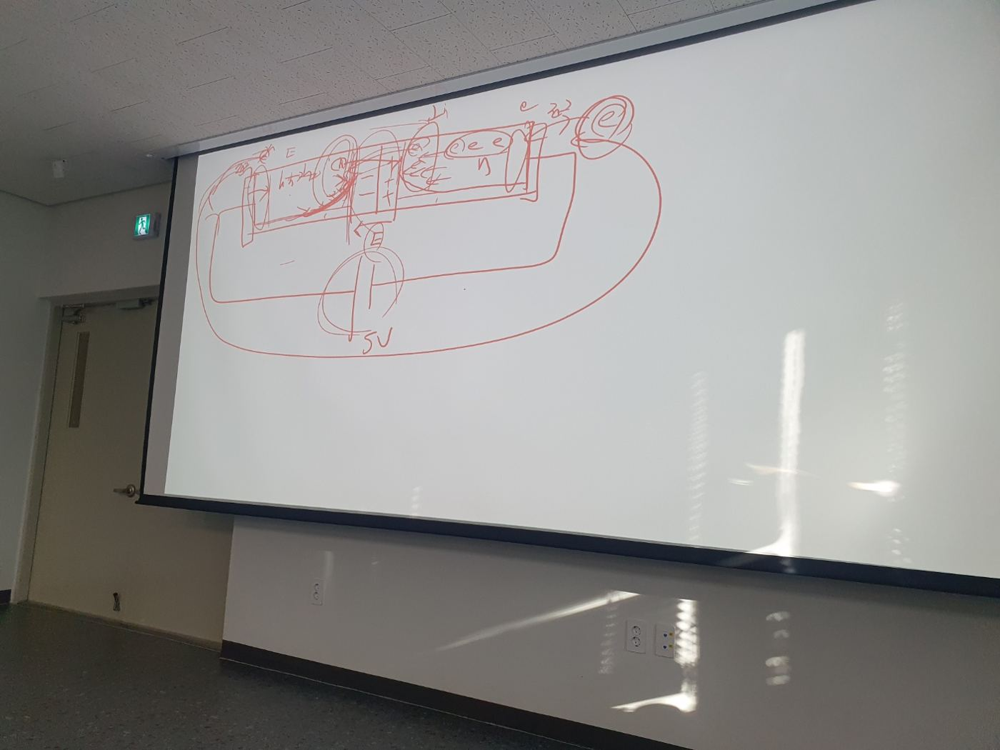
오프라인 00:32 "포워드 걸어 주면 장벽이 [낮아져서] 일렉트론과 홀이 디퓨전[한다] — 근데 그것만으로 전류를 다 설명할 수 있을까? … 전류가 흐른다는 것은 어떤 순간에 대한 이야기입니까? 아니면 지속적으로 일어나는 이야기입니까?"
오프라인 01:41 "넘어가면 농도가 이렇게 exponential decay 한다는 것은, 여기 있는 홀이 [넘어온 전자를] 공격해서 재결합하면서 없앤다는 거죠. … 홀이 못 없앤 애들은 더 넘어옵니다. 그러면 또 이 홀이 공격을 해요."
오프라인 02:47 "전쟁으로 따지면 국경이 무너진 거잖아요. … 국경에서 [홀이] 없어졌으니까 얘를 메꾸기 위해서 뒤에 후방인 애들이 오겠죠? 이 후방인 애들은 어떻게 올까? … 디퓨전 또는? … 드리프트입니다."
오프라인 03:23 "제가 분명히 [중성 영역엔] 전기장이 없다 했잖아요. … 사실 실제로는 아직 조금 있어요. 조금 있고, 그 전기장에 의해서 머조리티 캐리어들이 움직입니다."
오프라인 03:56 "끊임없이 일렉트론이 넘어오고 끊임없이 전방에 있는 애들은 재결합[으로] 다 써. … 결국은 이 끝에 홀이 없어지겠죠. 그럼 그 홀이 어디서 공급된다? … 전극에서 공급을 해요. … 전극에서 일렉트론이 빠져나가면 홀이 자동적으로 공급되는 거야."
오프라인 05:23 "[이런 고리가] 계속 지속적으로 되면서 전류가 흐르고 있어요. 단순히 홀이 넘어가고 일렉트론 넘어가고, 이 원타임 이벤트로는 전류가 지속적으로 흐르지 않는다."
정리 — 순방향 전류의 닫힌 고리
① 장벽↓ → n 의 전자가 p 로 확산(소수 캐리어 주입) → ② p 쪽 다수 캐리어 홀이 재결합으로 그 전자를 없앰(그래서 δn 이 exp 로 감소) → ③ 앞줄 홀이 줄어든 만큼 뒤쪽 홀이 약한 전기장에 의한 drift로 메움 → ④ 맨 끝에서 모자란 홀은 전극이 공급(= 전극으로 전자가 빠져나감) → ⑤ 그 전자는 외부 회로를 돌아 n 쪽 전극으로 들어감. 반대편(홀 주입)도 같은 고리. 다섯 고리 중 하나라도 끊기면 전류는 안 흐른다.
자료에 없음 8장 슬라이드에서는 "중성 영역 E = 0"으로 놓고 소수 캐리어 확산만 계산했다. 이 대목은 그 단순화 뒤에 숨은 것 — 중성 영역에도 작은 전기장이 있고 다수 캐리어는 drift 로 공급된다 — 을 꺼낸 것이다. 확산 전류(소수) + drift 전류(다수)를 합치면 어느 단면에서나 전체 전류가 같다.
응용 — 사이리스터(pnpn)는 왜 처음엔 안 켜지나
내 필기 굿노트 18쪽: 왼쪽 = 위 고리 그림, 오른쪽 = p | n₁ | p | n₂ 사이리스터, 접합 아래 F · R · F, "positive feedback", "3번째 단자에서 h 넣어주거나 / 전압을 크게 걸어서 h 가 넘어가게".
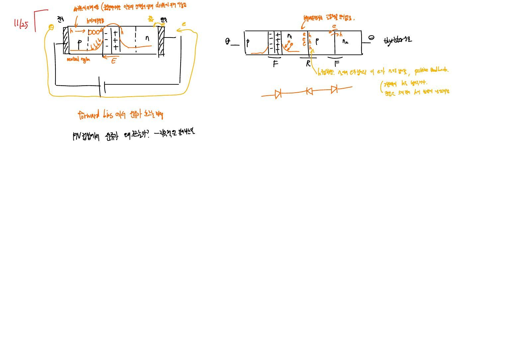
오프라인 06:07 "교과서 뒤에도 나옵니다. 이런 pnpn — 사이리스터라는 반도체 소자가 있습니다. … 이 구조의 동작 원리를 볼 때, 방금 얘기한 PN 접합에서 전류가 흐르는 과정을 이해하는 것이 중요하게 나옵니다."
오프라인 07:11 "만약에 [면접] 위원이 '이 구조에서 전류가 안 흐르는 이유를 설명해 보세요' 하면 어떻게 대답합니까? 단순히 forward, reverse, forward 니까 직렬 연결이고 reverse 가 걸린 가운데 다이오드가 안 켜지니까 — 이렇게 대답할 수도 있겠죠. 근데 좀 더 근본적으로 보면 …"
오프라인 08:38 "[n₁ 으로] 홀이 넘어왔어. 일렉트론이 재결합으로 없애. … 근데 이 부족해진 일렉트론을 공급해 줄 데가 있다, 없다? 없다." (n₁ 은 양옆이 p 라 전극이 없다)
오프라인 09:26 "'reverse 가 있어서 안 흐른다'라고 얘기하기에는 너무 PN 접합 전류에 대한 이해가 부족하게 보이는 [답이에요]. … 재결합해서 없앤 일렉트론을 다시 공급해 줘야 하는데 — 이게 다 엮여 있는 과정인데 지금 어디서 끊긴 거예요?"
오프라인 10:52 "[트리거는] 숨통을 틔워 줍니다. … 만약에 누가 홀을 주입한다고 치면, 그 전에는 일렉트론이 넘어오는 게 잘 안 됐어. 그런데 홀을 주입하는 순간 일렉트론이 많이 넘어옵니다. … 그러면 홀이 더 넘어가고, 일렉트론이 더 넘어오고 — 점점 positive feedback 루프가 형성이 돼. 그러면서 전류가 갑자기 확 흐르게 됩니다. 이게 사이리스터의 트리거링, 턴온입니다."
오프라인 12:34 "처음에 숨통을 틔우는 것을 세 번째 단자에서 억지로 한 번 넣어 주는 걸로 해결할 수도 있고, 또는 전압을 크게 확 걸어서 홀이 [끝까지] 넘어가게 만들어 주기도 합니다."
오프라인 12:54 "핵심은 — PN 다이오드든 BJT 든 사이리스터든, 단순히 농도 차이로 홀 넘어가고 일렉트론 넘어가서 전류가 흐른다고 생각하면 안 된다는 거예요. 넘어가고, 재결합하고, 재결합한 만큼 보충하기 위해 또 공급되고 — 이게 다 closed loop 가 돼야 전류가 흐른다."
★ 면접·서술형 예상 "pnpn 에 + − 를 걸었는데 왜 전류가 안 흐르나?" — 약한 답: 가운데 접합이 역방향이라서. 교수님이 원하는 답: 가운데 n₁(그리고 p) 영역은 전극이 없어서, 재결합으로 소모된 다수 캐리어를 공급받을 길이 없다 → 닫힌 고리가 끊김. 게이트로 홀을 넣으면 고리가 이어지고 positive feedback 으로 켜진다. 교수님이 직접 "면접 위원이 물으면"이라고 틀을 줬다.
수업 중 이야기AI 시대의 시험·숙제 (녹음 13:35~16:20)
오프라인 13:42 "AI 를 이용한 치팅 때문에 수능이랑 등등 말이 많았잖아요. … 국가고시에서도 마음먹고 초소형 카메라 이렇게 하면 막기가 [어려운데], 일반 학교에서 그걸 방지하는 건 정말 어려운 것 같습니다. … 금속탐지기를 할 수도 없는 노릇이고. 그래서 점점 교수님들도 시험 방식을 바꿔야 [합니다]."
오프라인 14:25 "[예를 들면] 기말고사를 [없애고] 저랑 10분간 돌아가면서 면담을 [보는 거죠]. … 디테일하게 0점에서 100점까지 매기는 건 불가능한데, 한 5분만 대화해도 상·중·하는 나눌 수 있을 것 같은데요."
오프라인 15:53 "저는 원래 수업에서 숙제를 [잘] 안 내 주는데 … 숙제를 내 줘도 별로 의미가 없는 것 같아요. 제가 만들어서 내도 AI 하면 바로 모범 답안이 나오니까."
자료에 없음 · 주의 14:25 의 "면담" 대목은 녹음이 흐려 "생각해 본다"는 이야기인지 실제 이번 기말 방식 공지인지 확실치 않다. 공지로 단정하지 말고 다음 수업에서 확인할 것. 다만 오늘 수업 첫 13분(사이리스터)에서 "면접 위원이 물으면 어떻게 대답하나"를 직접 연습시킨 것과 결이 같다 — 구두로 원리를 설명하는 연습은 해 둘 가치가 있다.
1쪽표지 — Ch.9 Metal-Semiconductor and Semiconductor Heterojunctions
Semiconductor Engineering
Ch. 9 Metal-Semiconductor and Semiconductor Heterojunctions
Dept. of Electrical Engineering · Jeongkyun Roh
9장 제목은 "금속–반도체 접합과 반도체 이종접합"이다.
7·8장은 같은 반도체(Si)끼리 p 와 n 을 붙였다(동종접합). 9장은 붙이는 짝을 바꾼다 — ① 금속 + 반도체(9.1·9.2), ② 밴드갭이 다른 두 반도체(9.3, 이종접합).
2쪽Overview — 빈 쪽 · 수업에서는 "왜 중요한가" 두 관점
Chapter 9 · Overview
PDF 에서는 제목만 있고 비어 있다. 오프라인 수업에서 교수님이 말로 채웠다.
오프라인 16:38 "쇼트키 다이오드, 챕터 9. 이 부분은 중요한 관점이 두 가지 있는데, 첫째는 이게 다이오드라는 관점 — 한쪽 방향으로 전기를 흘리는 정류 역할. … 두 번째 관점은 반도체에서 오믹 컨택이 되는데, 이게 중요하기 때문에."
오프라인 17:15 "PN 다이오드를 만들더라도 내가 여기다 5 V 를 걸려면 — 여러분 악어 클립 같은 걸 생각하잖아요. 결국 전압을 걸려면 무조건 금속으로 연결해요. … 그러면 모든 반도체 소자에서 금속–반도체 접합은 불가피하게 무조건 일어날 수밖에 없습니다."
오프라인 18:08 "그래서 이렇게 컨택이 만들어지는데, 이런 컨택 때문에 성능이 떨어지면 안 되니까 오믹 컨택을 만들려고 노력을 합니다. 이런 부분 때문에 중요한 [챕터]입니다."
내 필기 굿노트 19쪽 맨 위: Chapter 9, Schottky diode : Diode, Ohmic contact · p | n 막대 양 끝 빗금 = 전극, "M-S contact".
작년(2025) 필기 첫 쪽이 같은 틀이다. "Schottky diode → 가장 simple 한 반도체 소자 (
Ga₂O₃ 로 제작 가능 — p-doping ✕, n-doping 만 가능)" · M–S contact ① Schottky diode →
Rectifying contact ② Metalization(전극 거는 것) →
Ohmic contact(Non-rectifying). 아래에 MOSFET 그림과
Rtot = Rch + Rcontact(100 + 2 → 채널을 10 으로 줄이면 R
contact 를 무시 못 함).
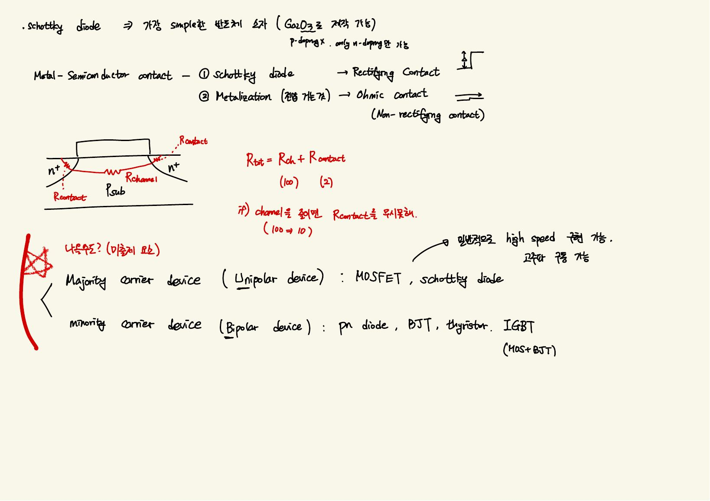
자료에 없음 (작년 수업) 작년엔 이 자리에서 "소자가 작아질수록 접촉 저항 비중이 커진다"를 숫자로 보였다. 채널 저항 100 일 땐 접촉 2 가 무시되지만 채널을 10 으로 줄이면 2 가 20 % 다. 그래서 첨단 공정일수록 오믹 접촉(→ 실리사이드, 부록)이 중요하다. 올해 수업 마지막(61:37~)의 실리사이드 얘기와 이어진다.
3쪽Contents
9.1 The Schottky Barrier Diode
9.2 Metal-Semiconductor Ohmic Contact
9.3 Heterojunctions
세 덩어리다. 9.1 정류하는 금속 접합(쇼트키 다이오드), 9.2 정류하지 않는 금속 접합(오믹 접촉), 9.3 이종접합. 11/25 수업은 9.1 + 9.2 까지 나갔다(4~5·7·10~11쪽 + 실리사이드).
4쪽Schottky Barrier — 붙이기 전 / 붙인 후 (녹음 18:32~28:25)
Schottky barrier: the barrier formed at the interface between a metal and a semiconductor
쇼트키 장벽 = 금속과 반도체가 맞닿은 면에 생기는 에너지 장벽.
[그림 · Before contact] metal | Vacuum level | n-type semiconductor · φm: the metal work function · φs: the semiconductor work function · χ: the electron affinity
세 가지 에너지 길이를 정의한다. 모두 진공 준위(VL, 전자가 물질 밖으로 완전히 빠져나간 자리)에서 아래로 잰다.
· eφm(금속 일함수) = VL − EF(금속)
· eφs(반도체 일함수) = VL − EF(반도체). 도핑에 따라 바뀐다.
· eχ(전자 친화도) = VL − Ec. 물질 고유값이라 도핑과 무관(Si 4.01 eV).
그림은 φm > φs, 즉 금속의 EF 가 반도체의 EF 보다 아래에 있는 경우다.
- φm > φs: Electrons from the semiconductor flow into the lower energy states in the metal
→ Positively charged donor atoms remain in the semiconductor, creating a space charge region (depletion region)
붙이면 전자는 EF 가 높은 쪽(반도체)에서 낮은 쪽(금속)으로 흘러간다. 물이 높은 데서 낮은 데로 가는 것과 같다.
반도체 표면은 전자가 빠져나가 이온화된 도너(+)만 남는다 → 공핍층. 금속 쪽은 넘어온 전자가 표면에 아주 얇게(−) 쌓인다.
- φB0: The potential barrier seen by the electrons in the metal trying to move into the semiconductor → Schottky barrier
φB0 = φm − χ
금속 쪽 전자가 반도체로 넘어갈 때 보는 장벽이 쇼트키 장벽 φB0.
높이 = 금속 EF 에서 계면의 Ec 까지 = (VL − EF,m) − (VL − Ec) = φm − χ. 두 값 다 물질 고유값이라 전압·도핑과 무관한 상수다(이상적일 때).
- Vbi: The potential barrier seen by the electrons in the conduction band trying to move into the metal → the built-in potential barrier
Vbi = φB0 − φn
반도체 쪽 전자가 금속으로 넘어갈 때 보는 장벽이 Vbi.
φn = (Ec − EF)/e (반도체 내부에서 Ec 가 EF 위로 얼마나 떠 있나). 계면 Ec 높이 φB0 에서 φn 을 빼면 반도체 내부 Ec 에서 본 언덕 높이가 된다. pn 접합의 Vbi 와 같은 성격.
판서 18:32~22:30 1단계 — Chapter 9. Schottky diode : Diode, Ohmic contact · Energy band diagram · Before contact(Φ
M: work function, Electron affinity χ, Φ
S) ·
ΦM > ΦS 상자 · After contact 는 아직
"?" · 오른쪽: M | e⁻ | +++ | S 막대와 ρ(x) · E(x) · V(x) · PE.
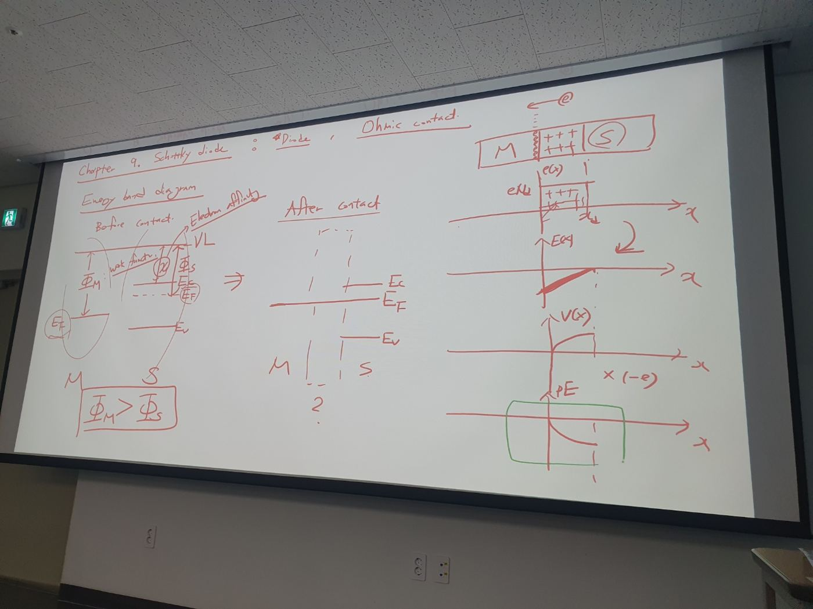
오프라인 19:16 "이게 메탈이고 이게 세미컨덕터입니다. … 진공 레벨로부터 페르미 에너지까지의 차이를 뭐라고 [하죠]? … 워크 펑션. … 그리고 컨덕션 밴드 엣지까지 이 차이를 χ 라고 하고 [electron affinity]."
오프라인 20:18 "애프터 컨택 했을 때 어떤 일이 벌어지나 … 컨택을 하면 불변의 진리는 뭡니까? 페르미 에너지 정렬이야."
오프라인 21:11 "지금 여기에서는 N 타입 반도체를 가정했어요. 그리고 [금속] 페르미 에너지 위치가 반도체의 페르미 에너지 위치보다 낮은 경우를 가정했죠. … φm 과 φs 중에 뭐가 더 큰 걸 가정했어요? φm."
오프라인 21:52 "그래서 총 4가지 경우의 수가 나온다고 했습니다. … [시험에서] 제가 [해마다] 유형을 다르게 하면 되겠지. … N 타입인 경우, P 타입인 경우, 그리고 φm 이 큰 경우 또는 φs 가 큰 경우 — 총 4가지. 지금은 교과서의 경우를 가져왔습니다."
오프라인 22:47 "페르미 에너지 위치는 전자가 가질 수 있는 최대 위치 에너지라 했어요. 그러면 위치 에너지가 높은 데 있는 애가 낮은 데로 가고 싶어 하는 거예요. … 높이 있어서 불안정한 반도체에서, 낮게 있어서 안정적인 금속으로 전자가 이렇게 흘러갑니다. 마치 앞좌석이 비어 있으면 [뒤에서] 앞으로 오려고 하잖아."
오프라인 23:37 "반도체에서 전자가 이동해. 그러면 금속 계면에 이렇게 쌓입니다. 반도체는 원래 [있던] 일렉트론이 없어졌[으니까] 뭐가 생긴다? 도너 이온. … PN 접합에서 원사이디드 정션이랑 좀 유사한 이런 식으로 돼요. 다른 점은, 얘는 [공핍층이] 거의 없고 전하가 금속 표면에 축적된 [거예요]."
오프라인 25:00 "금속 표면에 된 거는 아주 얇게, 아주 얇게 해 가지고 — 두 개의 면적이 같아야 될 거거든요. 당연한 거죠. … [ρ 에서] 푸아송 이퀘이션을 통해서 이렇게 접근하면 [E 를] 구할 수가 있겠죠."
오프라인 25:52 "원래 PN 접합은 [V 가] 아래로 볼록, 위로 볼록 이렇게 하잖아요. 근데 얘는 위로 볼록만 있다. 원사이드 정션 그릴 때랑 비슷하죠? 포텐셜 에너지를 그리면 곱하기 −e 하면 되니까. … 그 모양을 그대로 [밴드에] 가져오면 됩니다."
판서 26:20~27:40 2단계 — After contact 가 채워졌다: 왼쪽 금속 E
F 평평, 반도체 쪽 E
c·E
v 가 계면에서 위로 휜다, VL 도 같이 휜다. 오른쪽 아래 PE 그래프(초록 상자)가 그대로 반도체 밴드 휨 모양이 된다.
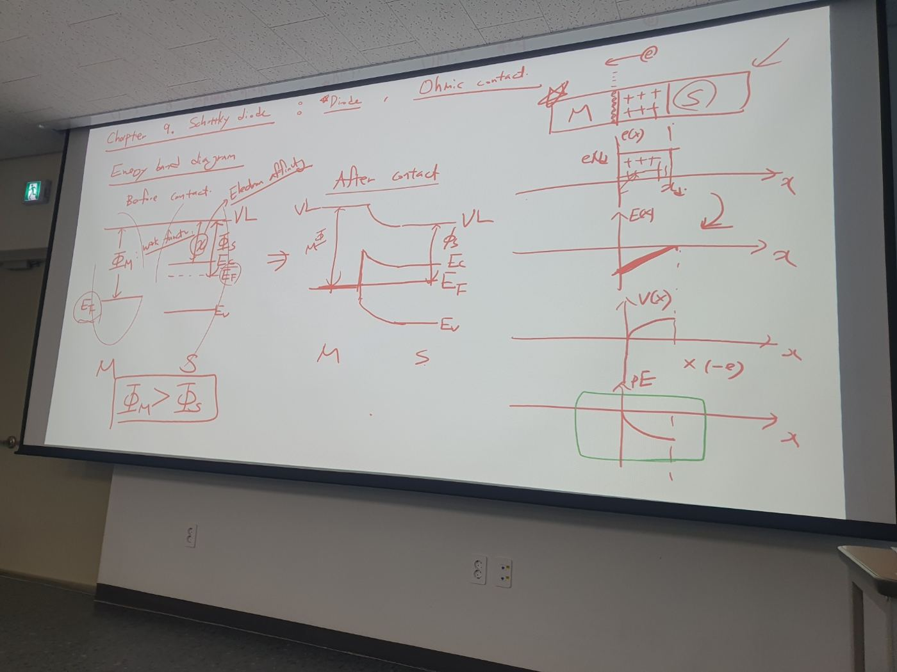
오프라인 27:52 "이 그림으로 전하 분포가 어떻게 될지 [먼저 생각하는 게] 1번이에요. 무슨 말이냐? 시험 문제는 어떻게 주어져요? P 타입 반도체에다가 워크 펑션이 예를 들어 [몇 eV 인] 금속을 썼다, 이런 식으로 나오겠죠. 그럼 그걸 계산해 가지고 전자가 어디에서 어디로 흐를지 먼저 생각을 해야 돼요. 페르미 에너지 위치를 보고. 그런 다음에 이런 그림을 그릴 수가 있겠죠."
내 필기 굿노트 19쪽: Before/After contact, "electron affinity(전자친화도)", "
페르미 에너지 위치가 정렬된 상태", "반도체 → 금속의 전자가 이동", 오른쪽 M | e+++ | S ≒ p⁺ | n "one side junction", "공핍층 형성과 비슷", ρ · E · V · PE.
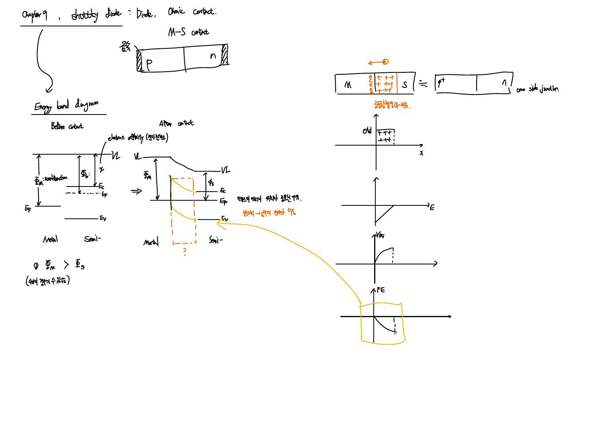
작년(2025) 필기 같은 그림에 번호를 붙여 놓았다:
"이때 χ 는 일정!" · ① eV
bi(built-in potential) — forward/reverse bias 로 벽을 조절해서 electron 넘기고 막고 조절 가능 · ② eφ
B0(Schottky barrier) —
조절 불가 ⇒ Rectifying contact "Diode". S→M 과 M→S 의 전자 흐름에 ⊕⊖ 표시.
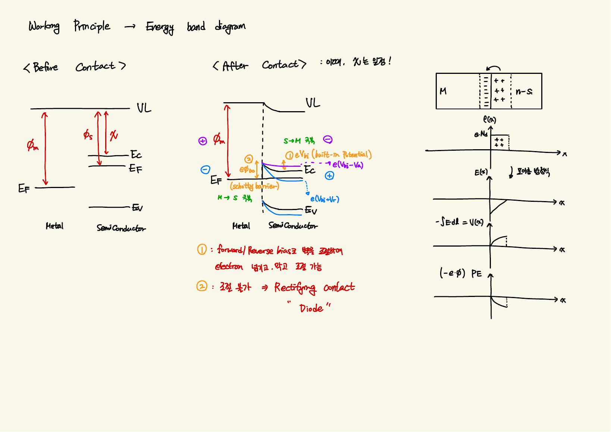
정리 — 밴드 그리기 4단계 (교수님이 시험 문제 순서라고 말한 그대로)
① 일함수 비교 → 전자가 어디서 어디로 가나(EF 높은 쪽 → 낮은 쪽). ② 그 결과 전하 분포 ρ(x): 반도체엔 이온(공핍층), 금속엔 표면 얇은 층, 넓이 같게. ③ ρ → (푸아송) E → V → PE = −eV. ④ PE 모양을 그대로 반도체 밴드에 붙이고, EF 를 한 줄로 맞춘다. 계면에서 Ec 는 금속 EF 위 eφB0 지점에서 시작(χ 일정).
★ 시험 포인트 4가지 경우(n/p × φm≷φs)를 다 그릴 수 있어야 한다. 교수님: "해마다 유형을 다르게 하면 되겠지" — 교과서 경우(n, φm > φs)만 외워 가면 안 된다는 뜻.
· n, φm > φs: 전자 S→M, 반도체 공핍(+), 밴드 위로 휨 → 쇼트키(정류)
· n, φm < φs: 전자 M→S, 반도체 표면 전자 축적, 밴드 아래로 휨 → 오믹(10쪽)
· p, φm < φs: 전자 M→S, 홀이 사라져 공핍(−), 밴드 아래로 휨 → 홀에게 장벽 → 쇼트키(정류). φBp = Eg/e + χ − φm
· p, φm > φs: 전자 S→M, 홀 축적, 밴드 위로 휨 → 오믹(10쪽 아래 그림)
외우는 법: "다수 캐리어가 빠져나가 공핍되면 쇼트키, 다수 캐리어가 쌓이면 오믹".
5쪽The Schottky Barrier — 바이어스를 걸면 (녹음 28:33~37:16)
[그림 3개] Without bias · With reverse bias (metal −, semiconductor +) · With forward bias (metal +, semiconductor −)
barrier(→): φB0 = φm − χ (세 경우 모두)
barrier(←): Vbi = φB0 − φn · Vbi + VR · Vbi − Va
화살표 두 종류를 구분해 읽는다.
· 오른쪽 화살표(금속→반도체): 장벽 φB0. 세 그림 모두 같다.
· 왼쪽 화살표(반도체→금속): 장벽 Vbi. 역방향이면 Vbi + VR(높아짐), 순방향이면 Vbi − Va(낮아짐).
순방향 = 금속에 +(n 형 반도체에 −). pn 에서 "p 에 +"였던 자리에 금속이 들어간 셈이다.
- The metal-to-semiconductor barrier (Schottky barrier) height is constant
- The semiconductor-to-metal barrier is increased under the reverse bias, and decreased under the forward bias
→ current flows in one way similar to pn junction: Schottky barrier diode
금속→반도체 장벽은 고정, 반도체→금속 장벽만 전압으로 오르내린다.
순방향: 반도체 전자가 낮아진 언덕을 넘어 금속으로 대량 이동 → 큰 전류. 역방향: 반도체 쪽 언덕이 높아져 막히고, 금속 쪽 전자는 원래부터 φB0 에 막혀 있음 → 아주 작은 전류. 그래서 한 방향으로만 흐르는 다이오드다.
오프라인 29:55~30:36 "[pn 접합과 쇼트키의] 가장 큰 차이가 뭘까요? … [pn 에서] 이 사이에 발생하는 에너지 장벽을 뭐라고 했죠? 왜 빌트인 포텐셜이라고 했습니까? 내가 아무 짓도 안 했는데 자동적으로 만들어졌다, 그래서 빌트인 포텐셜이라고 합니다."
오프라인 31:28 "그럼 빌트인 포텐셜이 언제 줄어듭니까? 내가 만약에 플러스, 마이너스 [순방향을] 걸면 … 빌트인 포텐셜이 이렇게 줄어들어요. … 전자도 넘어가고 홀도 넘어가고, 그러면서 전류가 흐른다."
오프라인 32:21 "[쇼트키에서] 일렉트론이 N 형 영역에 있다가 금속으로 넘어가고 싶은데 못 넘어가게 하는 게 뭡니까? … 이것도 내가 아무것도 안 했는데 만들어진 빌트인 포텐셜이야. PN 접합과 동일한 거죠."
오프라인 32:51 "그런데 금속 쪽에서 일렉트론이 넘어가려고 할 때는 요만큼을 극복해야 돼. … 이 장벽은 반도체 쪽에서 봤던 장벽과 기본적으로 만들어진 과정이 달라요."
오프라인 33:24 "빌트인 포텐셜은 왜 만들어져? 전자가 넘어가고 홀이 넘어가고 공핍층이 형성이 돼서, 공핍층에 의한 전하 때문에 전기장이 만들어지고 포텐셜이 생기고. … 근데 이 장벽은 근본적으로 왜 만들어졌어? 금속과 반도체의 [페르미] 에너지가 달라서 만들어진 거예요. 걔가 정렬하다 보니까. 물질의 기본 특성이 만든 거기 때문에 이건 빌트인 포텐셜이 아닙니다."
오프라인 34:15 "내가 만약에 플러스 마이너스 이렇게 걸었다고 쳤을 때 빌트인 포텐셜은 이렇게 줄어듭니다. 마치 PN 접합처럼. … 반대쪽[금속]에서 온 일렉트론은 — 전압을 걸어 주더라도 — 여기에서 보는 장벽 크기는 전압을 걸어 주는 거랑 상관없이 일정하다. 왜? 애초에 생긴 거 자체가 금속과 반도체의 페르미 에너지 [차이] 때문에 생긴 거니까. 플러스로 걸건 마이너스로 걸건."
오프라인 35:33 "그럼 [이 장벽이] 빌트인 포텐셜과 다른 건 여러분이 알고 있고, 이 배리어를 쇼트키 배리어라고 하자. … 쇼트키 배리어는 이런 특성 때문에 정류를 [할 수 있어요]. + − 를 걸면 일렉트론이 이쪽으로 쉽게 넘어갈 수 있게 돼요. 그런데 − + 하면 배리어가 늘어나니까 일렉트론이 못 [가]. … 반대쪽으로는 플러스를 걸건 마이너스를 걸건 넘어갈 수가 없게 됩니다. 그래서 정류기 역할을 할 수가 있는 거야."
오프라인 36:52 "쇼트키 배리어는 전압에 의해서 달라지지 않습니다. 물론 뒤에는 또 뭐가 나오냐 — 동영상 학습한 학생들은 알 건데 — 전압의 크기에 따라 쇼트키 배리어 크기는 달라지지 않는다고 했는데, 뒤에 보면 조금 다르지. 이게 논아이디얼 이펙트입니다." (→ 7쪽)
내 필기 굿노트 20쪽: 왼쪽 pn (eV
bi → eV
bi − V
a, ⊕⊖), 오른쪽 M–n (eφ, eV
bi, 주황 = 순방향, 초록 = 역방향) — "
금속과 반도체의 EF 가 달라 생기는 것 → forward bias 든 reverse bias 든 크기 일정 = schottky barrier", "← e 넘어가는 건 전압이 결정, e ⇒ ✕ → 정류기 역할", "non-ideal effect 로 바뀌긴 함…".
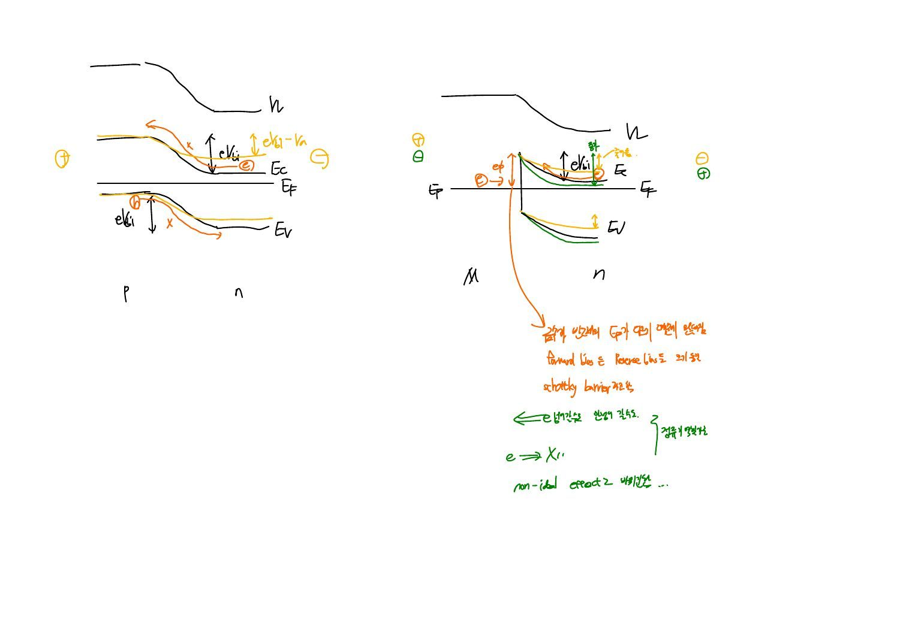
작년(2025) 필기 3쪽 왼쪽 위: ① 순방향(초록) e(V
bi−V
a) ② 평형(빨강) eV
bi ③ 역방향(파랑) e(V
bi+V
r),
eφB0 : 일정하다. 옆 J–V 그래프에 ③ 보라 점선(역방향 누설이 기울어 내려감) → "Non-ideal Effect : 실제로는 eφ
B0 가 바뀌더라".
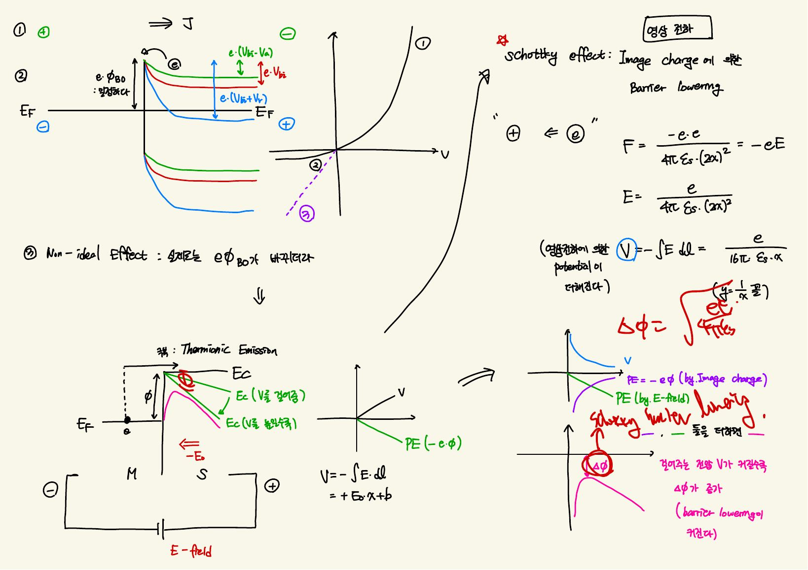
★ 시험 포인트 — 장벽 두 개의 정체 (교수님이 33:24~35:46 에 가장 길게 설명)
· Vbi(반도체→금속): 공핍층 전하가 만든 장벽 → 바이어스로 변함 (Vbi ± V)
· φB0(금속→반도체): 두 물질의 고유값(φm, χ) 차이가 만든 장벽 → 바이어스와 무관(이상적일 때)
"왜 φB0 는 built-in potential 이 아닌가?"를 말로 답할 수 있어야 한다.
6쪽Ideal Junction Properties — E, φ, W, C (수업에서 따로 안 다룸)
11/25 수업에서는 4쪽 판서(ρ → E → V → PE)로 모양만 짚고 식은 넘어갔다. 아래는 식 해설이다. 7장 one-sided p⁺n 계산과 완전히 같다.
■ Electric field in the space charge region
dE/dx = ρ(x)/εs = eNd/εs → E = ∫(eNd/εs)dx = (eNd/εs)x + C1
Electric field is zero at the space charge edge, E(xn) = (eNd/εs)xn + C1 = 0 → E = −(eNd/εs)(xn − x)
푸아송 방정식: 전기장의 기울기 = 전하밀도/유전율. 공핍층 안 ρ = +eNd(상수)라 E 는 직선.
공핍층 끝(x = xn)에서 E = 0 이라는 조건으로 상수를 정하면 E = −(eNd/εs)(xn − x). 음수 = 반도체→금속 방향(−x 방향). 계면(x = 0)에서 크기 최대 eNdxn/εs.
금속 쪽은 전하가 표면에 붙어 있어 공핍층이 사실상 0 → p⁺n 에서 p⁺ 쪽 폭을 0 으로 둔 것과 같다.
■ Potential distribution
φ(x) = ∫(eNd/εs)(xn − x)dx → φ(x) = (eNd/εs)(xnx − x²/2) ← φ(x = 0) = 0 as a reference point
→ Vbi = |φ(x = xn)| = eNdxn²/(2εs)
E 를 한 번 더 적분하면 φ 는 포물선(위로 볼록 — 교수님 25:52 "위로 볼록만 있다"). 계면을 0 V 기준으로 잡았다.
x = xn 까지의 전위차가 Vbi = eNdxn²/(2εs) — 삼각형 E 그래프의 넓이(밑변 xn × 높이 eNdxn/εs ÷ 2)와 같다.
■ The space charge width
W = xn = [2εs(Vbi + VR)/(eNd)]1/2 : same as the one-sided p⁺n junction
윗식을 xn 에 대해 풀고 역방향 VR 을 더했다. 역방향을 걸수록 W 는 √V 로 넓어진다. p⁺n 단측 접합 식과 똑같다고 슬라이드에 적혀 있다.
■ The junction capacitance
C′ = dQ′/dVR = eNd(dxn/dVR) = [eεsNd/(2(Vbi + VR))]1/2 → (1/C′)² = 2(Vbi + VR)/(eεsNd)
[그래프] (1/C′)² vs VR 직선 (W-Si, W-GaAs)
공핍층 전하 Q′ = eNdxn 이 전압에 따라 변하는 비율이 접합 용량(단위 면적). 정리하면 C′ = εs/W — 평행판 축전기와 같다.
(1/C′)² 를 VR 에 대해 그리면 직선: 기울기 = 2/(eεsNd) → 도핑 Nd, 가로축 절편 = −Vbi. Vbi 를 알면 φB0 = Vbi + φn 으로 쇼트키 장벽 높이를 실험으로 잰다(C–V 측정).
자료에 없음 7장 부록(작년 족보에 안 나왔는데 교수님이 짚은 것)에 "(1/C′)² 절편"이 있었다. 같은 그래프가 9장에서 다시 나온 셈이다. 기울기 → Nd, 절편 → Vbi → φB0 한 줄로 외워 둘 것.
7쪽Nonideal Effects on the Barrier Height — Schottky barrier lowering (녹음 37:18~51:44)
■ Ideal Schottky barrier height: φB0 = φm − χ
이상적인 쇼트키 장벽 높이. 지금까지는 이게 상수라고 했다.
■ Schottky Barrier lowering: Image-force-induced lowering, Schottky effect
[그림] Metal | Dielectric, 점전하와 금속 안의 거울상 전하, 전기력선
쇼트키 장벽 낮아짐(쇼트키 효과). 원인은 영상 전하(image charge)가 만드는 힘이다.
금속 표면에서 거리 x 에 전자(−e)가 있으면, 금속 속 전자들이 밀려나 표면에 + 가 생긴다. 이 효과는 금속 안쪽 같은 거리 x 에 +e 가 하나 있는 것과 똑같이 계산된다(전자기학 영상법). 그래서 두 전하 거리는 2x.
F = −e²/[4πεS(2x)²] = −eE : image force E = e/[4πεS(2x)²]
쿨롱 힘: 거리 2x 인 +e, −e 사이의 끌어당기는 힘. F = (−e)E 로 놓으면 그 자리의 전기장 E = e/[4πεS(2x)²].
→ −φ(x) = +∫x∞ E dx′ = +∫x∞ e/[4πεS·4(x′)²] dx′ = −e/(16πεSx)
무한히 먼 곳을 0 으로 잡고 전기장을 적분해 전위를 구했다. ∫ 1/x′² = 1/x 이므로 결과는 1/x 꼴.
전자의 위치에너지 PE = −eφ 로 보면 PE(x) = −e²/(16πεSx): 금속에 가까울수록 아래로 쑥 내려가는(끌려 들어가는) 곡선 — 오른쪽 위 파란 그림 "PE = −eφ".
- Constant electric field E → −φ(x) = −e/(16πεSx) − Ex
여기에 원래 접합 전기장(공핍층의 E, 계면 근처에선 거의 일정)이 만드는 직선 기울기 −Ex 를 더한다.
"원래 장벽(직선 비탈)" + "영상 전하 우물(1/x)" = 꼭대기가 계면에서 xm 만큼 들어간 자리로 뭉툭하게 낮아진 언덕(두 번째 그림의 파란 곡선).
- The position of the maximum barrier (xm): d[eφ(x)]/dx = 0 → xm = √[e/(16πεsE)]
언덕 꼭대기 = 미분이 0 인 곳. e/(16πεsx²) = E 를 풀면 xm.
Si, E = 6.8×10⁴ V/cm 이면 xm ≈ 2.1 nm.
- lowering of the potential barrier (Δφ): Δφ = √[eE/(4πεS)]
xm 을 대입하면 낮아진 양 Δφ = 2Exm = √(eE/4πεs).
Si, E = 10⁴ V/cm → Δφ ≈ 0.011 V, 6.8×10⁴ → ≈ 0.029 V, 10⁵ → ≈ 0.035 V. 작지만 exp 안에 들어가므로(8쪽) 전류엔 크게 듣는다. E↑ → Δφ↑.
[그림 3] e Δφ, eφBn, e(Vbi − Va), Ec′, Ec, eVa
실제 장벽 eφBn = eφB0 − eΔφ. 순방향이면 E 가 약해져 Δφ 가 작고, 역방향이면 E 가 세져 Δφ 가 크다.
수업 — ① 일정한 전기장이 걸린 밴드 (37:59~44:13)
오프라인 38:39 "[역방향으로] 걸면 배리어 크기가 늘어나고, [순방향] 걸면 줄어들게 되죠. 그러면서 전기가 흘렀다가 안 흘렀다가 하는 건데, 이쪽[금속]에서 바라보는 쇼트키 배리어의 크기 — 이 크기는 일정합니다. 이론적으로 그렇다는 거죠. 하지만 실제로는 얘가 걸어 준 전압의 영향을 받더라. 그게 바로 쇼트키 배리어 로어링 효과입니다."
오프라인 39:45 "물리전자 때 조금 했던 내용이에요. 기억할지 모르겠지만 … [field emission], 터널링, 파울러–노드하임 터널링 이름만 할 때 했던 건데."
판서 40:03~44:13 M | S 에 전지 연결, E ← 방향 화살표. 오른쪽: V = −∫E·dl = −ax + b, E 그래프(일정 E₀), V(직선 증가), PE(직선 감소, 동그라미). 곡선 화살표가 PE 모양을 왼쪽 밴드 E
c 비탈로 옮긴다.
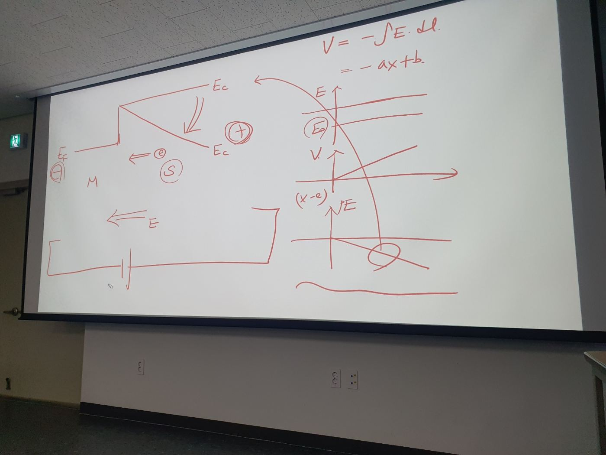
오프라인 40:55 "일렉트릭 필드가 만약에 E₀ 라고 이렇게 일정하다고 친다면, 적분을 하게 되면 얘는 이렇게 되는 거죠. … 지금 어떤 경우를 생각하냐면, 필드가 걸리면 여기 있는 일렉트론이 [금속으로] 접근하고 있는, 이런 경우를 생각하는 거거든요."
오프라인 42:16 "곱하기 −1 을 하면 포텐셜 에너지를 그릴 수가 있습니다. PN 접합이랑 완전 똑같죠. … 원래 반도체랑 금속을 접합시켜 놨으면 플랫하잖아. 근데 여기다 전압을 걸었어. 그러면 이 밴드가 이렇게 [기운다는] 거예요."
오프라인 43:28 "반도체 쪽을 플러스, 금속 쪽을 마이너스 이렇게 걸게 되면 [밴드가] 이렇게 눕게 됩니다. … 그런데 이렇게 되더라도 여전히 쇼트키 배리어의 크기는 똑같습니다. 바이어스가 안 걸렸을 때도, 걸렸을 때도. 그러니까 쇼트키 배리어 크기는 원래는 똑같다는 거죠."
자료에 없음 슬라이드는 "Constant electric field E"를 한 줄로 넘기는데, 교수님은 이걸 바이어스를 건 밴드 그림으로 따로 그렸다(교과서 공핍층 비탈을 단순화해 계면 근처를 직선으로 본 것). 핵심: 전기장이 일정 → V 는 직선 → PE 도 직선 → 밴드는 곧은 비탈. 비탈이 가팔라도 계면의 꺾인 모서리 높이(φB0)는 그대로다 — 영상 전하를 넣기 전까지는.
수업 — ② 영상 전하 (44:13~48:15)
판서 44:19~47:31 왼쪽 밴드: 금속 E
F, 계면에 eφ
B0, 금속 안
⊕e(image charge) — 거리 r — 반도체 쪽 ⊖. 아래 V(x) 곡선(1/x), x(−e) → PE 곡선(아래로 발산). 오른쪽 식: F = −e²/[4πε
s(2x)²] = −eE, E = e/[4πε
s(2x)²],
V = −∫E·dl = −e/(16πεsx)(동그라미).
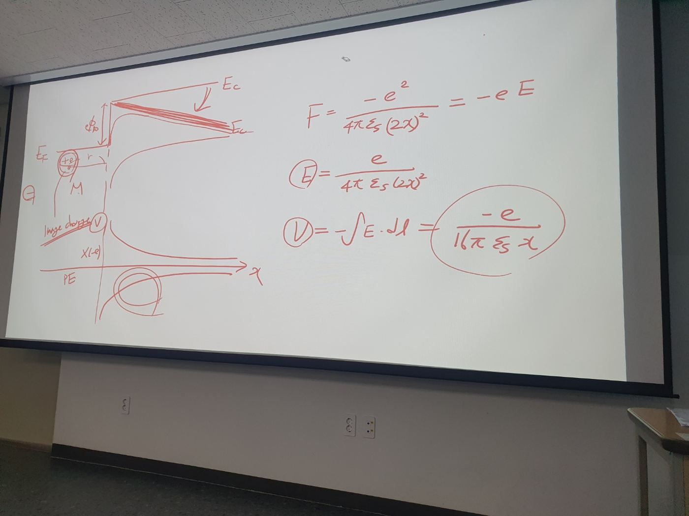
오프라인 44:19 "+ 를 하고 − 를 걸어서 여기 있는 전자가 이렇게 [금속 쪽으로] 온다고 쳐 봅시다. 그러면 이 전자가 금속 부분에 있는 전자를 repulsive force 로 밀어냅니다. 원래 금속 표면에 일렉트론이 많은데 얘를 밀어. … 그러면 플러스가 이렇게 남아 있게 되는데, 마치 이거를 동일 거리에 그냥 반대 플러스 전하가 있는 것처럼 생각하고 문제를 풀어도 된다."
오프라인 44:52 "이게 무슨 차지입니까? 영상 전하, 이미지 차지. … 여러분 아주 중요한 과목이 전자기학이야. 맥스웰 [방정식] … 전자기학 시간에 이미지 [차지 배웠죠]."
오프라인 45:26 "내가 접근하고 있는 일렉트론과 영상 전하 + 가 있으면 항상 무슨 힘이 존재한다? 쿨롱, attractive force. … 거리 R 의 제곱, 그리고 전하 2 개 곱하니까 −e 의 제곱. 그런데 이 force 가 있다는 것은 field 가 존재한다는 거고, 힘의 크기 = charge × electric field."
오프라인 46:14 "일렉트릭 필드를 하니까 포텐셜을 구할 수가 있습니다. V 를 써도 되고 φ 를 써도 됩니다. … −e/(16πεs x). … 이 그래프는 x 분의 1 그래프입니다. 여기다 곱하기 −1 을 하면 포텐셜 에너지가 되죠."
자료에 없음 · 부호 주의 판서는 "V = −e/(16πεsx)"로 적었고 슬라이드는 "−φ(x) = −e/(16πεsx)"다. 교수님도 "V 를 써도 되고 φ 를 써도 된다"고 했다. 부호 관례가 섞여 있으니 그림으로 기억할 것: 영상 전하 효과로 전자의 PE 는 금속에 가까울수록 −∞ 로 떨어진다(끌려 들어간다). 식으로는 PEimage(x) = −e²/(16πεsx).
수업 — ③ 둘을 더하면 장벽이 낮아진다 (47:34~51:44)
판서 47:34~50:54 오른쪽 위: 원래 장벽(빨강 직선 비탈) 위에 영상 전하 PE 를 더한 파랑 곡선 →
Δφ → Schottky barrier lowering. 아래
Δφ = √(eE/4πεs), E 에 파랑 동그라미, 오른쪽
E↑.
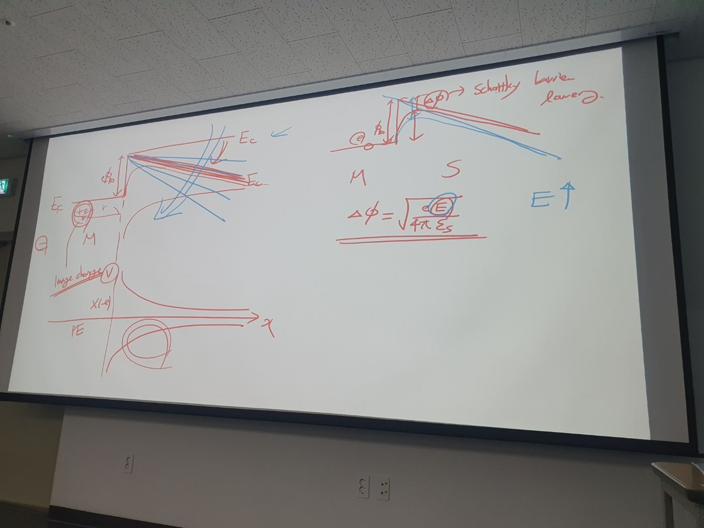
오프라인 47:59 "얘를 여기다 더하면 — 끝으로 갈수록 영향이 미미하니까 더할 게 없고 처음에만 많이 더하면 되죠. 그럼 얘가 이렇게 됩니다."
오프라인 48:40 "일렉트론 입장에서 넘어가야 되는 배리어 크기가 φB0 였어. 전압을 걸어 준다고 해도 이 배리어 크기는 안 바뀌었습니다. … 그런데 실제로 이미지 전하에 의한 배리어 로어링 현상 때문에 실제 배리어 크기는 … 원래 생각했던 배리어 크기보다 Δφ 만큼 차이가 생긴다. 이것을 쇼트키 배리어 로어링이라고 합니다."
오프라인 50:01 "쇼트키 배리어 로어링이 된 정도를 봤더니 이렇게 나와 있는데, 여기서 뭐가 제일 중요합니까? … E. … 내가 [전압을] 높이면, 옆 그림에서는 기울기가 이렇게 급격해지는 거죠. 기울기가 급격해지면 얘가 이렇게 됩니다. 그러면 로어링이 어떻게 돼요? 더 [돼요]."
오프라인 50:54 "일렉트론 입장에서 극복해야 하는 장벽 크기가 일렉트릭 필드에 의해서 더 줄어든다는 거죠. 일렉트릭 필드가 늘어나면 극복할 배리어 크기가 줄어든다. … 이게 제가 초반에 얘기했던 거랑 완전히 다른 얘기가 되잖아요. PN 접합은 [빌트인이] 전압에 따라 늘어나기도 줄어들기도 하는데 쇼트키 배리어는 항상 일정하다고 했는데 — 실제로는 [많이 걸어 주면 배리어가 낮아진다]."
내 필기 굿노트 21쪽: 위 왼쪽 ⊕⊖ 바이어스 밴드, 가운데 "schottky barrier 크기는 일정", "영상전하(image charge)", V · PE 곡선, F · E · φ 식, 오른쪽 "w/o bias" V = −∫E dl = −ax + b · E · V · PE. 아래 "
이미지 전하에 의한 barrier lowering 으로 배리어 크기가 낮아짐", Δφ = √(eE/4πε
s) "
E↑, Δφ↑".
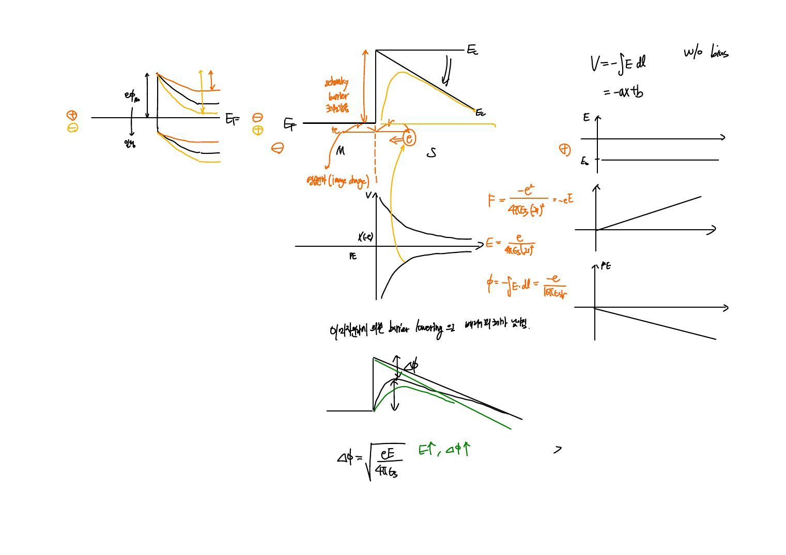
작년(2025) 필기 3쪽 오른쪽과 4쪽. ★ "Schottky effect: Image charge 에 의한 Barrier lowering", F · E · V(영상전하에 의한 potential 이 더해진다, y = 1/x 꼴), PE(by image charge) + PE(by E-field)
"둘을 더하면" → Δφ, "걸어주는 전압 V 가 커질수록 Δφ 가 증가(barrier lowering 이 커진다)". 4쪽: 장벽을
넘어가는 것 =
Thermionic Emission, lowering 으로 낮아진 데를 넘는 것 =
schottky emission, 전압을 더 높이면 장벽 폭이 줄어
tunneling — Field-enhanced tunneling(FE) = Field emission =
Fowler–Nordheim tunneling. 결론: "Thermionic Emission 만으로는 전류 증가가 안 되지만 schottky emission/field emission 효과로 인해 전압↑ : 전류↑ 효과 일어난다!"
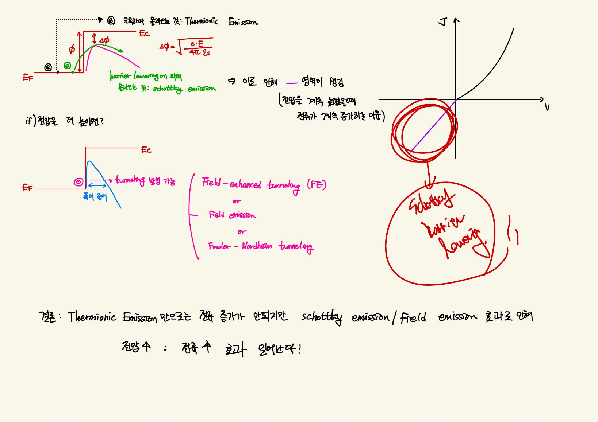
정리 — barrier lowering 한 줄
영상 전하(1/x 우물) + 접합 전기장(직선 비탈) = 꼭대기가 xm 에서 Δφ 만큼 낮아진 언덕. Δφ = √(eE/4πεs) ∝ √E. 역방향 전압 ↑ → E ↑ → Δφ ↑ → 역방향 누설 전류가 포화하지 않고 계속 증가(8쪽).
전자가 장벽을 지나는 세 방식(작년 필기): thermionic emission(원래 높이를 열로 넘음) · schottky emission(낮아진 높이를 넘음) · field emission / F–N tunneling(얇아진 벽을 뚫음).
★ 시험 포인트 ① "이상적이면 φB0 는 일정한데 실제로는 왜 바뀌나?" → 영상 전하, 쇼트키 효과. ② Δφ 식에서 제일 중요한 변수 = E(교수님이 직접 질문, 50:11). ③ 그림: 직선 비탈 + 1/x 곡선 = 낮아진 꼭대기, xm 표시. ④ 작년엔 별표 + "thermionic / schottky / field emission" 세 이름을 구분했다.
8쪽Ideal Current-Voltage Equation — 열전자 방출 (수업: 역방향 누설 52:51~54:22만)
■ Current transport in a pn junction: minority carriers
■ Current transport in a metal-semiconductor junction: majority carriers
→ Thermionic emission of majority carriers over a potential barrier
pn 다이오드 전류 = 소수 캐리어가 주입된 뒤 확산(8장). 쇼트키 다이오드 전류 = 반도체의 다수 캐리어(전자)가 장벽을 열에너지로 뛰어넘는 것(열전자 방출, thermionic emission). 금속으로 들어간 전자는 금속의 바다 같은 전자 속에서 바로 섞이므로 "소수 캐리어가 쌓이는" 단계가 없다.
- Js→m: the electron current density due to the flow of electrons from the semiconductor into the metal
- Jm→s: the electron current density due to the flow of electrons from the metal into the semiconductor
- J = Js→m − Jm→s: the net current density
두 방향의 전자 흐름 차이가 알짜 전류. 평형에선 둘이 같아 0.
· Jm→s: 금속 전자가 φB 를 넘음 → 바이어스와 무관한 상수 (= JsT)
· Js→m: 반도체 전자가 Vbi − Va 를 넘음 → exp(eVa/kT) 배로 변함
J = [A*T² exp(−eφBn/kT)][exp(eVa/kT) − 1] A* = 4πemn*k²/h³
J = JsT[exp(eVa/kT) − 1], JsT: reverse saturation current density
JsT = A*T² exp(−eφBn/kT) = A*T² exp(−eφB0/kT) exp(eΔφ/kT)
모양은 pn 다이오드 식과 똑같다: Js[exp(eV/kT) − 1]. 다른 건 Js 의 속.
· A* = 유효 Richardson 상수. 자유전자 질량이면 120 A/cm²K². 물질마다 m*에 비례.
· JsT ∝ T² exp(−eφBn/kT): 장벽이 0.1 V 낮아지면 exp(0.1/0.0259) ≈ 47배 커진다.
· 마지막 식: 실제 장벽 φBn = φB0 − Δφ 를 넣으면 exp(eΔφ/kT) 인자가 붙는다. 예) φBn = 0.67 V, 300 K → JsT ≈ 6×10⁻⁵ A/cm².
Δφ: the image force lowering → increases with an increase in the reverse-bias voltage
[그래프] JR vs VR: Experimental result 가 Theoretical result 보다 계속 증가
역방향 전압 ↑ → 계면 E ↑ → Δφ ↑ → JsT 가 exp(eΔφ/kT) 로 ↑. 그래서 실험의 역방향 전류는 이론처럼 평평하게 포화하지 않고 계속 올라간다(오른쪽 그래프).
오프라인 52:51 "원래 이게 정상입니다. forward 쪽에서는 exponential 하게 [오르고], reverse 쪽에서는 전류가 안 흐르죠. … 근데 이게 어떻게 [됐다는] 거예요? [역방향 쪽이 아래로 기울었어요]. 왜? 뭐 때문에? 쇼트키 배리어 로어링 때문에."
오프라인 53:30 "이 reverse 쪽이 뭘 의미합니까? 메탈과 반도체에 마이너스, 플러스 이렇게 걸리면 얘가 이렇게 되거든요. … 아무리 내가 [역방향을] 많이 걸어도 전자가 못 넘어가기 때문에 원래라면 전류가 일정해야 되는데, 전압을 많이 걸면 [배리어가] 점점 더 이렇게 줄어들어. 그래서 이 리키지 커런트가 reverse 쪽에서 [포화하지 않고] 조금씩 증가하는 모습을 보이게 됩니다."
내 필기 굿노트 22쪽 위: 다이오드 기호, J–V 곡선 역방향 쪽 주황 "증가" — "
schottky barrier lowering 때문에", 옆 밴드 "E
F 낮아짐", 그 아래 역방향 밴드 + "터널링".
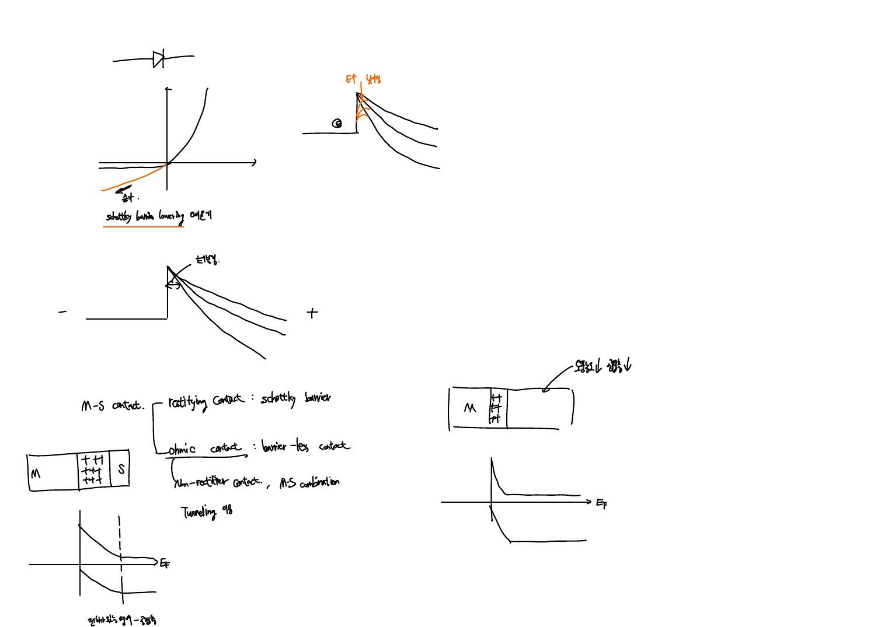
작년(2025) 필기 4쪽 오른쪽 J–V: 역방향에 보라 직선 "이로 인해 — 영역이 생김(전압을 계속 높였을 때 전류가 계속 증가하는 이유)" → 빨간 큰 동그라미 "Schottky barrier lowering!!". 작년 수업에서 교수님이 가장 크게 강조한 자리로 보인다.
정리 쇼트키 J–V 는 pn 과 같은 꼴 J = JsT[exp(eVa/kT) − 1]. 다만 ① 전류 주인공이 다수 캐리어의 열전자 방출, ② JsT = A*T²exp(−eφBn/kT) 가 pn 보다 훨씬 크고, ③ 역방향에서 barrier lowering 때문에 포화하지 않는다.
9쪽Schottky Diode vs. pn Junction Diode (수업에서 안 다룸 — 작년 별표 3개)
■ Current mechanism
- pn junction diode: diffusion of minority carriers
- Schottky diode: thermionic emission of majority carriers over a potential barrier
전류의 정체가 다르다. pn = 소수 캐리어 확산, 쇼트키 = 다수 캐리어 열전자 방출.
■ The magnitude of the reverse saturation current densities
Js = eDppn0/Lp + eDnnp0/Ln, dominated by the generation current, ~10⁻⁷ A/cm²
JsT = A*T²exp(−eφBn/kT) = A*T²exp(−eφB0/kT)exp(eΔφ/kT)
JsT ≫ Js
pn 의 역포화 전류는 소수 캐리어 농도(ni²/N, 아주 작음)에 비례 → 이상적이면 10⁻¹¹ A/cm² 수준, 실제는 공핍층 생성 전류가 지배해 ~10⁻⁷. 쇼트키는 장벽 하나(0.5~0.8 V)만 넘으면 되고 다수 캐리어가 주인공이라 몇 자릿수 더 크다.
결과: 같은 전류를 얻는 순방향 전압이 쇼트키가 더 작다(오른쪽 그래프: 쇼트키 ~0.3 V, pn ~0.6 V 에서 켜짐). 대신 역방향 누설은 크다.
■ Switching characteristics (frequency response)
- Schottky diode: a majority carrier device
No diffusion capacitance when forward-biased → a higher frequency
No stored minority carriers → fast switching
[그래프] ID(mA) vs VD(V): Schottky diode(왼쪽) vs pn junction diode(오른쪽)
pn 다이오드는 순방향 때 중성 영역에 소수 캐리어가 쌓여 있다(8장 δp(x)). 끄려면 이걸 다 치워야 해서 느리다(역회복 시간) — 쌓인 전하가 확산 용량처럼 보인다.
쇼트키는 다수 캐리어 소자라 쌓이는 소수 캐리어가 없다 → 확산 용량 없음 → 고주파·빠른 스위칭. SMPS 정류, RF 검파에 쓴다.
작년(2025) 필기 6쪽 —
별표 3개. J–V 그래프 Schottky(파랑, 0.2~0.4 V) vs pn(빨강, 0.6~0.9 V).
★ "왜 schottky 가 pn 보다 빨리 커지는가?" → pn: p–n 을 붙여서 만듦 ⇒ built-in potential 大, 극복 전압 필요 / Schottky: 극복해야 하는 장벽이 절반(schottky barrier)
★ "왜 schottky 가 pn 보다 더 급격하게 떨어지는가?" → leakage current: schottky 가 pn 보다 큼(by. schottky barrier lowering)
★ pn: minority carrier 의 diffusion / Schottky: thermionic emission ⇒
majority carrier device, unipolar device ⇒ high frequency response, fast switching
1쪽 별표: "나올 수도?(미출제 요소)"
Majority carrier device(Unipolar): MOSFET, schottky diode — 일반적으로 high speed 구현 가능, 고주파 구동 가능 /
minority carrier device(Bipolar): pn diode, BJT, thyristor, IGBT(MOS+BJT).
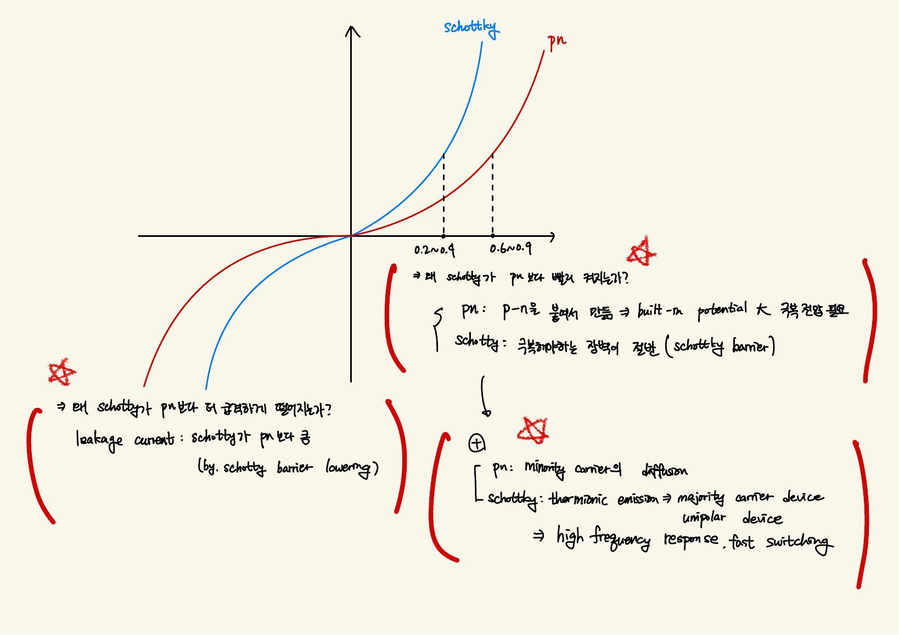
★ 시험 포인트 (작년 별표 그대로)
① 왜 쇼트키는 더 낮은 전압에서 켜지나 → JsT ≫ Js(다수 캐리어, 장벽 하나)
② 왜 쇼트키는 역방향 누설이 큰가 → JsT 자체가 크고 + barrier lowering 으로 계속 증가
③ 왜 쇼트키가 빠른가 → 다수 캐리어(unipolar) 소자, 소수 캐리어 저장 없음, 확산 용량 없음
④ 분류: unipolar = MOSFET, 쇼트키 / bipolar = pn, BJT, 사이리스터, IGBT. 작년 필기에 "나올 수도? (미출제 요소)" — 작년엔 안 나왔다는 뜻으로 읽힌다.
10쪽Ohmic Contacts — 이상적 비정류 장벽 (녹음 54:22~57:29)
■ Ohmic contacts: non-rectifying metal-to-semiconductor contacts. A low-resistance junction provides conduction in both directions between the metal and semiconductor
■ Two types of ohmic contacts: ideal nonrectifying barrier and tunneling barrier
오믹 접촉 = 정류하지 않는 금속–반도체 접합. 양쪽 방향 모두 저항 작게 흐른다(V = IR 직선 → "옴의").
만드는 법 두 가지: ① 처음부터 장벽이 안 생기게 금속을 고른다(이 쪽) ② 장벽은 있지만 아주 얇게 해서 뚫고 지나가게 한다(11쪽).
■ Ideal nonrectifying barrier
[n-type] Before contact: φm < φs · After contact: Electrons flow from the metal to the semiconductor · Forward biased / Reverse biased: No barrier for electrons
n 형에서 φm < φs(금속 EF 가 더 높음)면 전자가 금속 → 반도체로 흘러 반도체 표면에 전자가 쌓인다(축적). 밴드는 계면에서 아래로 휜다.
전자 입장에서 어느 쪽으로 가든 넘을 언덕이 없다 → 순방향(전압 걸면 밴드가 기울 뿐)이든 역방향이든 그냥 흐른다.
[p-type] φm > φs (Before / After contact, eφBp, eφp)
p 형은 반대로 φm > φs 일 때 오믹이다. 전자가 반도체 → 금속으로 빠져나가면 반도체 표면에 홀이 쌓이고, 밴드가 위로 휘어 홀(다수 캐리어)에게 장벽이 없다.
(4쪽 시험 포인트의 4가지 경우 중 오믹 2개가 이것.)
오프라인 54:29 "보시면 이런 생각이 들 거예요. 쇼트키 배리어 로어링을 고려하지 않더라도 [역방향을 세게] 걸어 주면 얘가 이렇게 [가파르게] 되잖아요. 그럼 뭐가 일어난다는 생각이 들어요? 터널링이라는 생각이 들지 않아요? … 그럼 이거랑 뭐가 관계돼 있냐면 바로 오믹 컨택이랑 관련이 되겠습니다."
오프라인 55:15~55:50 "금속과 반도체의 컨택은 [두 가지] — rectifying contact, 정류 컨택은 항상 쇼트키 배리어가 있는 컨택이고, 오믹 컨택은 배리어가 없는 [컨택]."
오프라인 56:02 "반도체 소자에서는 당연히 둘 중에 뭘 원한다? 당연히 오믹 컨택을 원해. 왜? PN 정션을 이렇게 한 다음에 나는 여기다가 5 V 를 걸어. 그런데 만약에 이쪽에 배리어가 있다고 치면 여기서 2 V 를 깎고 가운데에 [3 V 만] 걸리면 말이 안 되죠? 그래서 무조건 오믹 컨택을 원해요."
오프라인 56:33 "그런데 반도체 공정에 사용할 수 있는 금속은 제한적이에요. 그리고 반도체 종류도 그렇고. 그러면 반도체와 금속을 잘 조합해서 … 오믹 컨택, non-rectifying 을 만들기가 쉽다? 안 쉽다. … 두 개를 아주 잘 맞춰서 오믹 컨택을 만들 수도 있지만, 대부분의 경우는 그게 힘들기 때문에 우리가 쓰는 방법은 바로 터널링입니다."
내 필기 굿노트 22쪽 아래: M–S contact — rectifying contact : schottky barrier / ohmic contact : barrier-less contact (non-rectifier contact, M–S combination · Tunneling 이용). M | +++ | S 막대와 밴드 "전하가 있는 영역 = 공핍층".
자료에 없음 왜 "금속을 잘 고르기"가 어려운가 — Si 의 χ = 4.01 eV 인데, n 형 오믹이 되려면 φm 이 φs(≈ 4.0~4.3 eV)보다 작아야 한다. 그런 금속은 알칼리·알칼리토(반응성 큼)라 공정에 못 쓴다. 게다가 실제 Si 계면엔 계면 준위가 많아 EF 가 계면에 거의 고정(Fermi level pinning)되어 φm 을 바꿔도 장벽이 잘 안 변한다. 그래서 산업은 거의 다 11쪽 방식(고농도 도핑 + 터널링)을 쓴다.
11쪽Ohmic Contacts — 고농도 도핑 → 터널링 장벽 (녹음 57:29~61:37)
■ Heavily doped semiconductors → tunneling barrier
The width of the depletion region decreases as the doping concentration increases
→ as the doping concentration increases, the probability of tunneling through the barrier increases
공핍층 폭 W ∝ 1/√Nd(6쪽 식). 도핑을 엄청 높이면 장벽은 높이는 그대로지만 폭이 수 nm 로 얇아진다. 그러면 전자가 넘지 않고 뚫고 지나간다(터널링) — 2장 유한 장벽 터널링 확률이 폭에 지수로 민감했던 그것.
[그림] metal | n-type semiconductor / metal | Heavily doped region: eφBn, e⁻ 가 얇은 장벽을 가로지르는 화살표
아래 그림: 금속과 반도체 사이에 n⁺⁺ 층을 끼우면 계면 밴드가 아주 가파르게(얇게) 휘고, 전자가 수평으로 터널링한다. 그 뒤로 n⁺⁺ → n 사이는 작은 계단만 남는다.
Tunneling current Jt ∝ exp(−eφBn/E00) where, E00 = (eℏ/2)√[Nd/(εsmn*)]
터널링 전류는 exp(−장벽/E00). E00 ∝ √Nd 이라 도핑 ↑ → E00 ↑ → 지수의 크기 ↓ → Jt 급증.
Si(m* ≈ 0.26m₀) 어림: Nd = 10¹⁷ → E00 ≈ 3 meV, 10¹⁹ → ≈ 34 meV, 10²⁰ → ≈ 106 meV. kT(26 meV)보다 커지는 10¹⁹ cm⁻³ 이상부터 터널링이 열전자 방출을 압도한다. 비교 대상이 kT 라는 점: 열전자 방출은 exp(−eφB/kT), 터널링은 exp(−eφB/E00).
오프라인 57:38 "아까 봤던 것처럼 전압을 많이 걸면 밴드가 휘면서 터널링이 일어날 것처럼 생겼잖아요. 근데 [오믹은] 전압이 낮을 때부터 터널링이 되어야 되잖아. 그러면 어떻게 할까?"
오프라인 58:28 "이 그림으로부터 추측할 수 있는 게 있습니다. 에너지 밴드를 봤을 때 휘어져 있는 부분은 무슨 영역이다? … 공핍층. 왜? … 밴드가 휘어져 있다면 그 말은 전하가 있다는 말이다." (11/18 수업 "밴드 휨 = 전하"와 같은 말)
오프라인 59:10 "그럼 어떻게 하면 될까? 농도를 높여. … 도핑 농도가 낮아지면 공핍층이 길어져요. 도핑 농도가 높아지면 공핍층이 줄어들어. 이거 쉽게 생각하면, 여기 일렉트론 부족분을 메꿔 줄 만한 일렉트론이 많으니까 [가까운 데서 다 메꿔져] 공핍층이 줄어들고요."
오프라인 60:15 "공핍층 두께만큼만 밴드가 휘기 때문에 공핍층이 좁으면 밴드가 그만큼 급격히 깊이 휘게 됩니다. 그럼 꼭 이걸 안 뛰어넘더라도 터널링으로 지나갈 수 있는 가능성이 훨씬 더 올라가게 됩니다. 사실 반도체 공정 회사는 오믹을 만들기 위해서 어떻게 하냐 — 그냥 그 영역을 도핑을 엄청 많이 해."
판서 60:38~61:16 "여러분이 잘 아는 구조" — MOSFET 단면: S · D 금속 패드(동그라미 "금속"), 아래
n⁺ 영역(동그라미), gate / SiO₂, p-Si 기판.
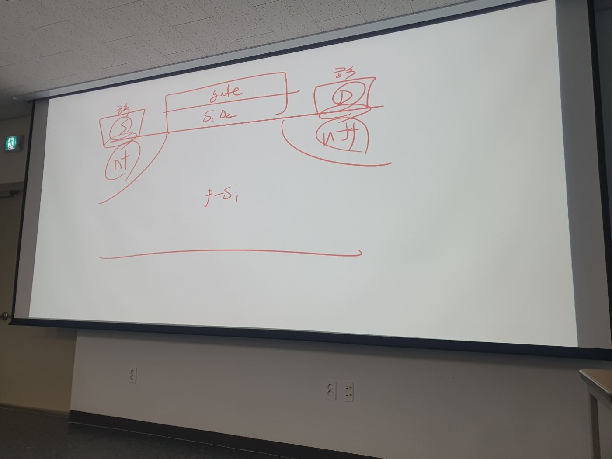
오프라인 60:55 "여기를 n⁺ … 이거를 엄청 도핑을 높여 합니다. 드레인, 소스 여기는 금속입니다. … [그래서] 오믹 컨택을 형성하게 된다는 거죠."
오프라인 61:22 "일단 반도체 공정에서 기본적으로 우리가 사용하는 거면 농도를 높이면 거기서 오믹이 된다. 그렇게 컨택 저항이 크지 않게 된다는 거죠."
작년(2025) 필기 5쪽 — "ohmic contact 을 만들려면? ⇒
Heavily doped region!" ① 적절한 φ 를 가진 metal 사용 ② doping 높이 : 공핍층↓ ⇒ tunneling 가능(n⁺ doping↑). 그리고 ★ 별표:
M | p⁺ | p | n | n⁺ | M 막대 — 양 끝 금속 바로 안쪽에 p⁺, n⁺ 를 넣으면 "ohmic contact 발생!". 아래는 실리사이드(열·laser·Energy ⇒ 합금화(silicide), 저항↓↓ : ohmic contact, unreacted metal / Silicide / Si).
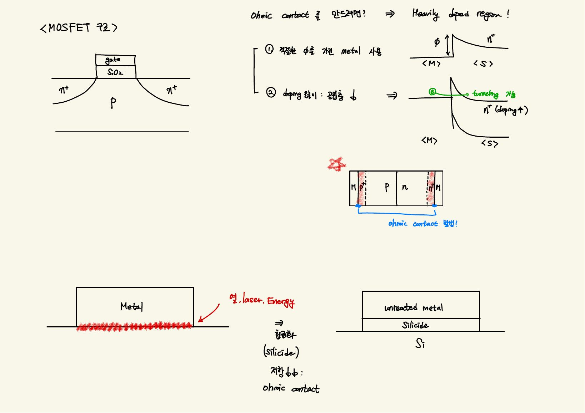
★ 시험 포인트 ① 오믹 만드는 두 방법(일함수 맞추기 / 고농도 도핑 → 공핍층 얇게 → 터널링) ② "왜 고농도면 오믹이 되나"를 W ∝ 1/√Nd, "밴드 휨 = 공핍층 = 전하" 로 설명 ③ 실제 소자 그림에 오믹 자리 표시: MOSFET S/D 의 n⁺, 다이오드 양 끝 p⁺/n⁺ (작년 별표 그림 M–p⁺–p–n–n⁺–M). ④ Jt ∝ exp(−eφBn/E00), E00 ∝ √Nd.
부록실리사이드 — W → Ti → Co → Ni, 그리고 FinFET (녹음 61:37~64:18)
슬라이드에 없는 내용이다. 오믹 접촉의 "다음 단계"로 수업 마지막 3분에 판서했다.
판서 61:51~62:47 Silicide · MSi₂ · 금속과 Si 합금 · 금속 / Si → (열처리) ⇒ 금속 / Silicide / Si · → W → Ti → Co → Ni.
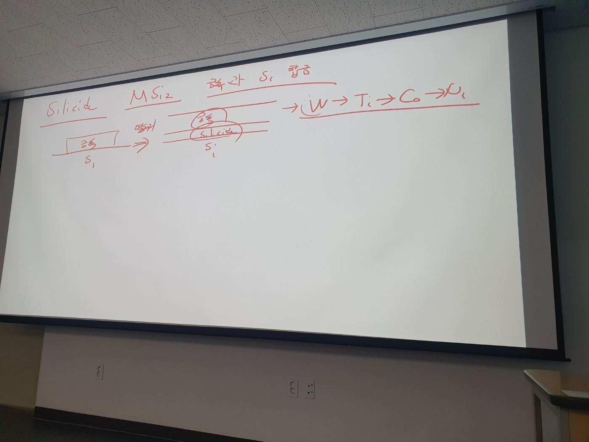
오프라인 61:37 "물론 이게 끝은 아닙니다. 실제 반도체 공정에서는 처음에 [MOS 를] 만들 때 이렇게 했었는데, 다음으로 넘어간 것은 실리사이드. … MSi₂ 라는, 금속과 실리콘의 합금이라고 생각하시면 돼요."
오프라인 62:12 "실리콘 위에다가 아까 얘기한 것처럼 도핑을 많이 해. 그런 다음에 금속을 이렇게 올리면 어느 정도는 괜찮은 오믹 컨택이 형성이 돼요. 그런데 첨단 반도체로 가면서 이런 특성들을 더 개선하려고 사람들이 개발한 것이 바로 실리사이드 공정인데요. 금속을 [올리고], 그런 다음에 열처리를 하게 되면 실리콘과 금속 사이에 실리사이드[가 생깁니다]."
오프라인 62:50 "실리사이드에 사용되는 금속의 종류는 초반에는 텅스텐, 그리고 타이타늄, 코발트, 니켈 — 텅스텐 실리사이드, 타이타늄 실리사이드, 코발트 실리사이드, 니켈 실리사이드 이런 식으로 사용이 되었습니다. 그래서 약 2010년도까지 [많이 쓰였어요]."
판서 63:03~64:07 앞 판서에 금속마다 동그라미, 아래
2010년 ⇓ FinFET · 3D MOSFET.
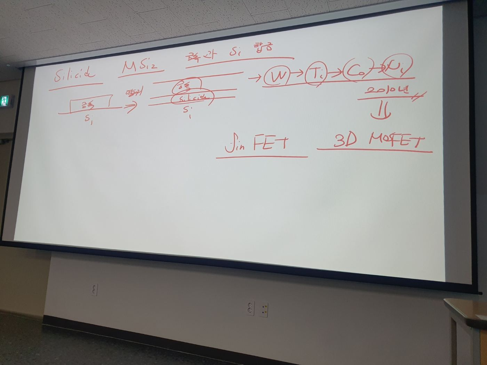
오프라인 63:16 "여전히 좀 더 높은 테크놀로지 노드를 쓰는 전력반도체 공장에서는 실리사이드를 많이 쓰고 있고요. 지금 [삼성·하이닉스 같은 로직·메모리] 공정에서는 지금은 [예전 방식 그대로는] 사용되지 않고 있는데, 그 이유는 트랜지스터 구조가 2차원에서 3차원으로 바뀌게 됩니다. … FinFET, GAA FET 이런 식으로 3차원으로 가게 되면서 실리사이드 공정을 적용하기 좀 어려워[졌어요]."
오프라인 63:57 "어쨌든 여러분들은 오믹 컨택을 만드는 손쉬운 방법으로서 — 단순하게 생각하면 농도를 높여서 하는 거, 그다음 생각하시는 분은 실리사이드. … 자, 여기까지." (수업 끝)
내 필기 굿노트 23쪽: MOSFET 단면(S · gate/SiO₂ · D, n⁺, P-Si) · Silicide · MSi₂ · 금속과 Si 합금 · 금속/Si → 열처리 → 금속/silicide/Si → W → Ti → Co → Ni, 2010년 ⇓ FinFET 3D MOSFET.
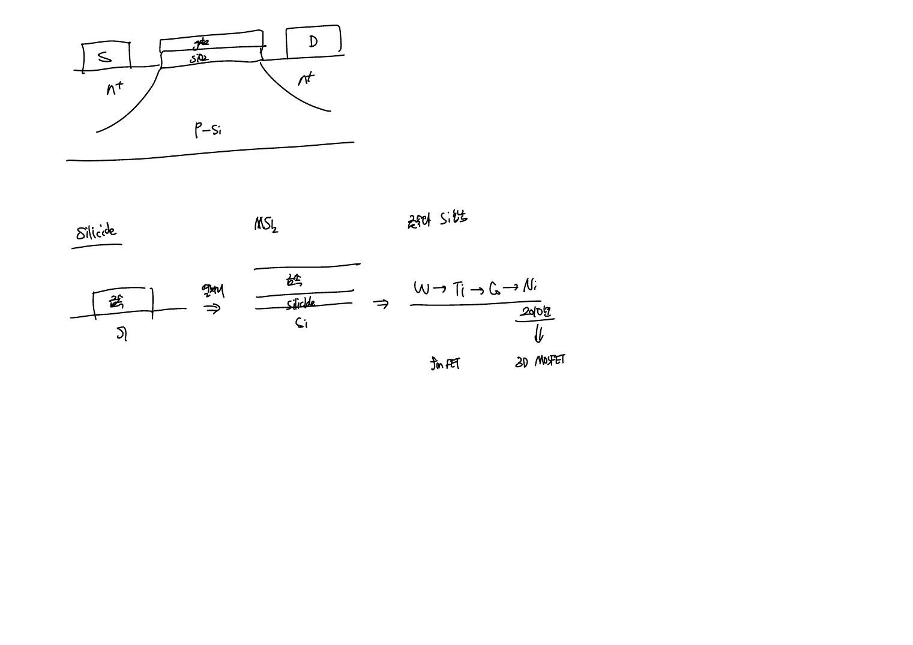
자료에 없음 · 배경 실리사이드는 금속 같은 낮은 비저항(수십 μΩ·cm)을 가지면서 Si 와 계면이 깨끗해 접촉 저항과 S/D·게이트의 면저항을 함께 낮춘다. 금속을 덮고 열처리 → Si 위에서만 반응 → 반응 안 한 금속은 식각으로 제거(자기정렬, salicide). 세대가 바뀐 이유는 대체로 선폭이 줄면서 앞 재료가 좁은 선에서 저항이 튀거나(TiSi₂) Si 를 많이 소모하는(CoSi₂) 문제 때문에 공정 온도가 낮고 Si 소모가 적은 NiSi 로 넘어간 것. 교수님 말 "2010년 이후 3D 구조에선 적용이 어려워졌다"는 판서 그대로 옮겼다 — 정확한 현재 공정 상태는 수업 범위 밖이다.
★ 감 잡아 둘 것 서술·면접형으로 "오믹 접촉을 실제로 어떻게 만드나?" → ① 고농도 도핑(터널링) → ② 실리사이드(MSi₂ 합금, 열처리, W→Ti→Co→Ni). 작년 필기에도 같은 흐름(5쪽 아래)이 있다.
12쪽Heterojunction — 이종접합 (11/25 수업까지 안 나감)
11/25 수업은 실리사이드에서 끝났다. 작년 필기도 9장에 이종접합이 없고 바로 Ch.10(11/26) MOSFET 으로 넘어간다. 이번에도 짧게 지나가거나 건너뛸 가능성이 있다(확인 필요).
■ Heterojunction: a junction made of two semiconductors with different bandgap (but nearly matched lattice constant)
이종접합 = 밴드갭이 다른 두 반도체의 접합. 단, 격자 상수가 거의 같아야 계면에 결함(끊어진 결합)이 적다. 예) GaAs–AlGaAs, Ge–GaAs(슬라이드 그림).
■ nP heterojunction [그림] Ge(n, 작은 Eg) | GaAs(P, 큰 Eg) · eχn, eχP, ΔEc, ΔEv, eφsn, eφsP → 접합 후 eVbin, eVbiP, EF 정렬
표기 약속: 소문자 = 밴드갭 작은 쪽, 대문자 = 큰 쪽. nP = 좁은 갭 n 형 + 넓은 갭 p 형.
· ΔEc = e(χn − χP): 전도대 계단 (전자친화도 차이)
· ΔEv = ΔEg − ΔEc: 가전자대 계단
붙이는 절차는 4쪽과 같다: EF 정렬 → 양쪽 공핍층 → 밴드 휨. 차이는 계면에서 Ec, Ev 가 불연속으로 뚝 끊긴다는 것(VL 은 연속, χ 가 달라서). Vbi 는 양쪽 몫 Vbin + VbiP 로 나뉜다.
■ nN⁺ heterojunction [그림] → Two dimensional electron gas
같은 n 형끼리 붙여도(좁은 갭 n + 넓은 갭 N⁺) 전자가 N⁺ 에서 좁은 갭 쪽으로 넘어가 계면의 삼각형 우물에 갇힌다(ΔEc 벽 + 밴드 휨). 두께 방향으로 갇히고 평면으로만 다니니 2차원 전자 가스(2DEG). 전자는 도너(N⁺ 쪽)와 공간적으로 떨어져 있어 이온화 불순물 산란이 적다 → 이동도 매우 큼 → HEMT(고전자이동도 트랜지스터)의 원리. 3장 2D DOS(계단 모양)가 여기서 실물로 나온다.
자료에 없음 작년 필기 Ch.10 첫 쪽에 "HEMT : High Electron Mobility Transistor"가 나온다(11/26). 작년엔 이종접합을 10장 도입에서 소자 이름으로 짚은 것으로 보인다.
부록시험 포인트 모음 — 올해 수업 강조 + 작년 별표
올해(11/25) 교수님이 직접 짚은 것
1. pn 순방향 전류의 닫힌 고리 — 주입 → 재결합 → 다수 캐리어 drift 보충 → 전극 공급. "원타임 이벤트로는 전류가 지속되지 않는다." 사이리스터가 처음엔 안 켜지는 근본 이유(n₁ 에 공급원 없음)와 트리거(positive feedback). "면접 위원이 물으면"
2. 밴드 그리기 4가지 경우(n/p × φm≷φs) — "해마다 유형을 다르게". 순서: 전자가 어디로 → ρ → E → V → PE → 밴드
3. Vbi vs φB0 — 하나는 공핍층 전하가 만든 것(바이어스로 변함), 하나는 물질 고유값 차이(이상적이면 불변). "그래서 정류"
4. Schottky barrier lowering — 영상 전하, F·E·V 유도, Δφ = √(eE/4πεs), "뭐가 제일 중요? E"
5. 역방향 누설이 포화 안 하는 이유 = barrier lowering
6. 오믹 — 왜 원하나(5 V 중 2 V 를 접촉이 먹으면 안 됨), 왜 어렵나(쓸 금속 제한), 어떻게(고농도 → 공핍층↓ → 터널링, "밴드 휨 = 전하"), MOSFET S/D n⁺, 실리사이드 W→Ti→Co→Ni
작년(2025) 필기 별표 ★
· Majority(unipolar: MOSFET, 쇼트키) vs minority(bipolar: pn, BJT, 사이리스터, IGBT) carrier device — "나올 수도? (미출제 요소)"
· Schottky effect: image charge 에 의한 barrier lowering (+ thermionic / schottky / field emission 구분)
· J–V 역방향 기울기 = "Schottky barrier lowering!!" (빨간 큰 동그라미)
· M–p⁺–p–n–n⁺–M : 고농도 층이 오믹을 만든다
· 쇼트키 vs pn 3문항: 왜 빨리 켜지나 / 왜 누설이 큰가 / 왜 빠른가(majority, unipolar)
★ 겹치는 곳 = 제일 유력 barrier lowering(올해 13분 + 작년 별표 2개), 오믹 = 고농도 도핑(올해 + 작년 별표), Vbi/φB0 구분과 밴드 그리기(올해 직접 "시험 문제는" 언급). 작년 별표인데 올해 수업에서 아직 안 다룬 9쪽 쇼트키 vs pn은 다음 수업에서 나올 가능성이 있다 — 미리 3문항 답을 외워 둘 것.
부록11/25 오프라인 수업 녹음 전사 전문 (자동 전사 · 손보지 않음)
굿노트 녹음 64분 23초를 Whisper(turbo)로 자동 전사했다.
손보지 않은 원문이라 영어 용어가 한국어로 깨진 곳이 많다(예: "샤키" = Schottky, "오미 컨택" = ohmic contact, "피엔" = pn). 위 본문 인용은 이 전사를 바탕으로 뜻이 통하게 다듬었고, 추정해 채운 말은 [ ] 로 표시했다. 13:35~16:20 은 수업 외 이야기.
펼치기 (583줄)
[00:08] 여기가
[00:10] 전류가 어떻게 흐르든 말거야?
[00:23] 이쪽엔 뭐 우미기라 치고
[00:26] 제가 이걸 왜 물어보냐면 피엔석 홈에서
[00:31] 돌려봐 왜 그러냐?
[00:32] 라고 하면은 이게 뭔가 너무 당연한 거네요. 약간 일닭 이런 느낌이죠. 말한 것처럼 후보드 걸어주면은 장비가 일화점에서 일렉트라마 홀이 디퓨는데 근데 그것만으로 전력을 해도 다 설명할 수 있을까?
[00:52] 두
[00:54] 제가 알고 싶어하려면 이게 뭔가 전류가 한다는 것은 어떤 순간에 대한 이야기입니까? 아니면 지속적으로 일어나는 이야기입니까?
[01:04] 지루포 이란에
[01:06] 5V를 썰었어 그럼 여기에
[01:10] 지구 쪽으로 이란
[01:13] 전류가 계속 흐르기 위해
[01:20] 여기 있는 홀이 넘어가고 끝나야 됩니까? 아니면 계속 넘어가야 됩니까?
[01:29] 겨수는 도모
[01:33] 여기 있는 홀이 넘어가. 넘어가면 어떻게 합니까?
[01:39] 여긴 이 레크로리
[01:41] 넘어가면 농도가 이렇게 Exponential Decay 한다는 것은 여기 있는 홀이
[01:49] 그렇게
[01:50] 공격을 해서 제게하면서 없애라는거죠. 맞나요? 근데 홀이 못 없앤 애들은 더 넘어옵니다. 그러면 또 이 홀이 또 공격을 해요.
[02:00] 맞죠?
[02:01] 여기는 헐도 옮겨도래 여기는
[02:04] 이렇게 해서 여긴 일렉트로 농도를 줄이는 거예요 맞나요? 맞죠?
[02:11] 여기서 우리가 한 개 더 나아가 되는 거예요 그러면 기존과 뭐가 바뀐 거예요?
[02:17] 일렉트로롤이 넘어왔어 그래서 일렉트로 공격하려고 홀이 투입됐어 그럼 기종은
[02:23] 기존에는 홀이 많았었는데
[02:27] 여기는 재결합판도 콜이 줄어들렸죠
[02:31] 맞나요? 그럼 그 홀을 어디서 공급해요?
[02:36] 코로디 동
[02:38] 이 홀을 공급하기 위해서
[02:40] 여기 이쪽에 홀이 많았잖아 그죠? 그럼 여기는 홀들이 이동합니다
[02:47] 전쟁으로 따지면 국경이 무너진 국경에서 침략을 해온 거잖아요. 국경이 국경에서 없앴어. 그러면 여기 홀도 없어졌으니까 얘를 메꾸기 위해서 여기
[03:02] 뒤에 후방인 애들이 오겠죠? 이 후방인 애들은 어떻게 올까?
[03:09] 뭔가 이동했다 그러면 둘 중에 하나입니다.
[03:13] 이동하는 드라이브Force 바람
[03:16] 빅스전 또는? 이거는 예각을 이동하는 것은 무슨입니까?
[03:22] 면
[03:23] 드리프트입니다. 드리프트. 그 이유는 아주 이상하죠? 제가 분명히 차지가 없으면 일렉트리 실드가 없다 했잖아요. 그래서 가운데는 일렉트리 실드가 바깥쪽 일렉트리 실드가 없는 뉴트럴 리전이라고 했어요.
[03:39] 일렉트 핸드가 없다고 했는데 사실 실제로는 아직 조금 있어요 조금 조금 있고 그 일렉트 핸드에 의해서 메조리 디캐리어들이 움직입니다
[03:49] 매드린 캐릭터 인지가 가지고 이 재결합을
[03:53] 무슨 말이냐
[03:56] 끊임없이 일렉트로들이 계속 넘어오고 끊임없이 전방에 있는 애들은 재결합한다고 다 써 그럼 전방에 있는 애들이 없어지니까 후방에서 홀들이 드리프트로 이동을 합니다 그럼 이동하다 보면 어디에 홀이 없어져? 결국은 이 끝에 홀이 없어지겠죠 그럼 그 홀이 어디서 공급된다?
[04:16] 그 후로 여기 있는 여기 있는
[04:21] 전극에서 여기 PN 작품이라고 하면 여기가 전극이고 여기도 전극입니다.
[04:28] 뭐 이거 정도
[04:30] 그러면 여기 있는 전국에서 을 공급을 해요.
[04:35] 전국에서 홀을 공부하는데 이게 무슨 말이야?
[04:41] 스콜이라도 원래 없는게 얘기죠 전국에서 공급한다 라는 말은
[04:46] 여기서 일렉트로는 이쪽으로 빠져나가는 걸로 생각합니다. 일렉트로는 빠져나가면 홀이 자동적으로 공급되는거야. 그럼 이 일렉트로는 어디갔나? 이 일렉트로는 이쪽으로 돌아
[04:58] 반대쪽에서 보면 이것도 마찬가지예요
[05:01] 꼴이 넘어와 꼴이 넘어와 우리는 일렉톤이
[05:05] 공격을 해서 재결합해. 그럼 여기 일렉트로 없어지죠? 여기는 다수의 일렉트로들이 드리프트로 이동해서 전방을 다시 지킵니다
[05:13] 그럼 끝쪽 이네트론이 없어지지 그 이네트론 누가 공급하죠
[05:18] 아까 여기 도라 원질렛 총리
[05:21] 이상
[05:23] 이를 와서 크로우치드 룩스가 계속 지속적으로 되면서 전류가 흐르고 있어요.
[05:29] 단순이 그냥 폴이 넘어가고 일렉트로 넘어가고 이 원타임 이벤트로는 전류가 지속적으로
[05:36] 부르지 않는다
[05:37] 그죠?
[05:39] 그러지 않을
[05:42] 제가 이거를 사실 뭐
[05:46] 이건 나중에 MOSFET MOS STRUCTURE에 밴드다잌을 할 때도 마찬가지구 나중에 여러분들이 좀 더 뭐
[05:53] 이 방향에 있는
[05:59] 교과서 뒤에도 나옵니다
[06:01] 이런 PMP의
[06:07] 사이리스트 하워라는 반도체 스터디가 있습니다. 근데 여기 이제 세 번째 전극이 없으면 이 전극이 없으면
[06:14] 기본적으로는 사이리스터 부조인데
[06:25] 이 구조의 동작원리를 볼 때 사실 제가 방금 얘기한 PN 접합에서 전류가 흐르는 과정을 이해하는 것이 중요하게 나옵니다.
[06:40] 플러스 마이너스 이렇게 걸면 사실 여기는 호워드인데 여기는 리버스모 여기는 다시 호워드죠. 그러니까 전류가 흘러 안 흘러. 전류가 죽어도 깨어나도 안 흘러.
[06:55] 그런데 얘가 전류가 함.
[06:57] 전류가 왜 안 늘었냐
[07:00] 왜 안으려냐 보세요
[07:01] 예배들로서 면접이 어디 여러분들한테
[07:06] 이 구조에서 플러스 마이너스
[07:11] 사이디스터는 트리가 되기 전에는 전류가 안 들어오거든요. 근데 트리가 되고 나면 전류가 흘러. 그럼 트리가 되기 전에는 일반적으로는 당연히 안 들어옵니다. 제가 방금 얘기한 것처럼 여기는 forward, 여기는 reverse, 여기는 forward. 그죠? 만약에 왼쪽 위원이 여러분들한테 자, 이 구조에서 이게 전류가 안 되는 이유를 설명해보세요 라고 하면 여러분은 어떻게 대답합니까?
[07:33] 단순히 얘는 forward bias, 얘는 reverse bias, 얘는 forward bias 이니까 이거 3개는 직렬 연결이고 직렬 연결이 되는 전류가 나타내되고 그러니까 reverse bias 가 걸리면 가운데 다이오드가 안 켜지니까 이거는 전류가 안 된다.
[07:49] 이렇게 대답할 수도 있겠죠 근데 좀 더 근본적으로 보면은
[07:53] 전류가 흐르기 위해서는 지속적으로 계속 이동을 해야 전류가 흐른다는 것입니다. 그러면 보시면
[08:02] 유광대에
[08:04] 그럼 여기 피해만 보시면 여기 플러스 마이너스 걸었으니까
[08:10] 이 포드 바이선 벌리면서 홀 넘어가고 일렉턴 넘어가죠 여기까지는 똑같죠? 맞나요? 여기까지는 똑같잖아 우리 피해 점수가 없으니까 자 그러면
[08:22] 여기에 일렉트로를 넘어와 그럼 일렉트로를 없애기 위해서 홀이 투입됩니다. 홀 투입되고 홀 투입되고 하면서 이렇게 똑같이 됩니다.
[08:31] 끝에 홀이 모자가니까 여기서 공부를 한다고 생각합니다. 맞죠? 근데 이 N은 어때요?
[08:38] 홀이 넘어왔어 홀이 넘어왔어 홀이 넘어왔
[08:42] 일렉트로드
[08:44] 써서 재결한도 없애 그럼 얘도 이렇게 쭉 줄어들 거 아니 맞죠? 근데 이렇게 없애는데 이 부족해진 일렉트로를 공급해줄 데가 있다 없다
[08:56] 온따
[08:58] 전류가 기본적으로 첫 번째 다음부터 안을며 전류가 안을며 전류
[09:07] 또 다른 게 많아
[09:13] 한글자막 by 김재현
[09:18] 이렇게 보면
[09:19] 얘네 두개는 전류가 엄청 다를러
[09:24] 그런데 얘는 전류가 가늘어
[09:26] 그렇기 때문에 손자가 소유가 안을냐?
[09:30] 라고 얘기하기에는 너무 피엔서 파웨터 일어내들에 대한 이해가 부족하게 보이는
[09:39] 한번 얘기하는 것처럼 여기서 홀이 넘어가면 여기 N타입의 메조리티 키를 일렉트로니 재결합해서 없애야 돼
[09:49] 재결을 키면서 없애야 홀이 다시 넘어와
[09:54] 그리고 재결합해서 없앤 일렉트로를 다시 공급을 해줘야
[09:59] 공급을 해야 할 수 있는 사
[10:01] 이게 다 엮여있는 과정인데 지금 어디서 끊긴 거예요?
[10:06] 일렉창 공지사 되잖아 맞죠?
[10:10] 5442입니다.
[10:16] 이거는 마찬가지로
[10:19] 이쪽에서 똑같이 일어났죠. 이쪽에서 똑같이 일어납니다. 여기에서는 홀이 넘어가서 일렉트론이 재결해서 없애고 없어진 일렉트론을 전국에서 공급받고 이해되는데 이 P쪽에서 일렉트론이 넘어오면 홀이 없애고 근데 그 없어진 홀을 공급하실 때도 없죠. 맞나요?
[10:36] 그렇기 때문에 얘와 얘 양쪽 전류가 안을 수 밖에 없는 상황이다 궁금해 주도 없으니까
[10:43] 여기서 조금만 더 생각을 하면 전류가 언제 흐르는지 알 수 있게 되는데 제가 아까 트리거라고 했잖아요?
[10:52] 그러면 숨통을 틀어줍니다. 숨통을 딱 한 번은 틀어줍니다. 이게 무슨 말이냐? 보세요.
[11:01] 여기 P와 여기 N이 있습니다. 근데 아까 일렉턴도 너무...
[11:06] 홀도 넘어가는데, 넘은 일렉트로를 재결합해서 홀이 없어지면 그 홀을 공급할 데가 없다고 했죠? 맞나요? 그런게 왜 절로 안으로? 근데 만약에 누군가 홀을 주입한다고 지하시나?
[11:21] weinen
[11:23] 만약에 홀을 주입하는 순간 어떤 일이 벌어지냐면 그 전에는 일렉트로는 넘어오는게 잘 안됐어. 그런데 홀을 주입하는 순간 일렉트로는 많이 넘어옵니다.
[11:34] 많이도 못 포크
[11:36] 폴을 주입하면 일렉트로가 갑자기 많이 넘어 오기 시작하고 그 일렉트로는 어디까지 가냐면 여기까지
[11:43] 많이 주입하면 N타입 P에 일렉트로 많이 주입하면 얘가 여기 따질까? 그러면 얘가 숨통이 트이는 거야
[11:53] 기존에는 홀이 넘어가면 홀을 일렉트로는 없애고 일렉트로는 부족히 신대잖아요 일렉트로는 공급받는 데가 없는데 갑자기 일렉트로는 넘어와서 순통이 태어지네 그러면 어떻게 돼? 그럼 여기
[12:06] 그러면 더 많이 넘어가 홀이 3번까지 됩니다 그러면 순통이 더 트니까 이렉터리가 더 넘어오고 점점 positive 패널의 루프가 형성이 돼
[12:19] 그러면서 전류가 갑자기 확 흐르게 됩니다.
[12:22] 우리는 처음에 수터 먼저 해줍니다
[12:26] 이해하시겠나요? 이게 바로 살리스터의 트릭어링, 턴원입니다.
[12:34] 이 사이리스터의 처음에 숨통을 트이게 하는 것을 세 번째 단자에서 이렇게 억지로 한번 넣어주는 걸로 해결할 수도 있고 또는 전압을 한번 크게 확 걸어가지고 여기 있는 홀이 여기까지 너무하게 만들어 주기도 합니다. 이거는 뭐 나중에 뭐
[12:54] 어쨌든 핵심은 뭐라는 거예요? 이게 PN 전파비든 BJT든 사일리스터든 PN에서 전류가 흐르는 과정인데 단순히 농도 차이에서 허리 넘어가고 농도 차이에서 일렉트로 넘어가고 그래서 이제 전류가 흐르는 단순히 이렇게 생각하면 안된다는 거예요
[13:14] 이게 넘어가고 재결합하고 재결합 패넬을 보충하기 위해서 또 공급되고 이런 것들이 다 클로즈 드럼프가 돼야지 전류가 설게 된다.
[13:26] 멕센서죠?
[13:28] -머나?
[13:35] 김
[13:37] 그 이번에 그 AI
[13:40] 뭐
[13:42] AI를 이용한 치팅 때문에 수능이랑 등등 많은 노래가 있었잖아요.
[13:47] 그래서
[13:50] 사실 국가고시에서도 잘 못 막는데 국가고시에서도 사실 마음먹고 초상의 카메라 이렇게 했을 때도 막기가 했는데
[13:58] 일반 학교에서 그걸 방뇌하면 정말 어려운 것 같습니다.
[14:02] 여러분들을 대학생이니까 사실 믿고 하는 건데
[14:07] 마음먹고 초소형 기계 이렇게 하면 일반 대학교 수업 시험 치는데 금속탐지기 할 수도 없는 노릇이고
[14:16] 그래서 점점 교수님들도 시험 방식을 바꿔야합니다.
[14:22] 제가 믿고 있는 것
[14:25] 기말고사를 앉히고 저랑 10분간 돌아가면서 면담을 봐
[14:32] 무슨 소리에요? 사실 몇 번 대화하면은
[14:37] 디테일하게
[14:40] 디테일하게 0점에서 100점까지 매기는 건 사실 불가능한데 사실 한 5분만 대화해도 상중한은 나눌 수 있을 것 같은데요. 그죠?
[14:50] 그런 문의가
[14:52] 수능도 얼마 전에 우리 전 총장님, 천은희 총장님 국가교육위원회에 계신 건 알고 있나요?
[15:05] 모르죠? 국가교육위원회라고 있어요 국가교육위원회 사실 국가의 모든 교육정책을 결정한 엄청 중요한 위원회인데 차정희 총장님께서 원래 교육감 하시려고 했다가 이제 거기로 가셨습니다 교육감은 안하는 경선 중간에 가셨는데 엄청 높은 자리에요 근데 이제 거기서 앞으로 수능은 약간 생명을 다 시험체대다 그래서
[15:30] 논술로 수능을 개편하고 AI를 이용해서 논술을 채점하겠다고 했다가 욕을 바바지고
[15:39] 공교롭게도 요즘 그런 이야기가 나오죠. 수능이 시대적 역할을 다한 것 같다는 객관식이 있어요.
[15:53] 저는 원래 수업에서 숙제를 안 해주는데
[15:58] 숙제 내주는 교과국도 있죠 근데 숙제 교준이 별로 의미가 없는 것 같아요 제가 만들어서 내도 AI 하면 바로 모범 답안이 나오니까
[16:10] 이런 시대에
[16:14] 교과구 운영은 어떻게 해야 되고 평가는 어떻게 해야 되고 이런 것들에 다들 고민을
[16:20] 하는 것 같습니다.
[16:38] 샤키 다이오드, 챕터 9 이 부분은 중요한 관점이 두 가지 관점이 있는데 일반은 이게 다이오드라는 관점에서
[16:50] 다이어드라는 관점에서 중요하고, 다이어드. 한쪽 방향과 전기를 흘리는 정육이 역할. 다이어드라는 관점에서 중요하고,
[16:59] 두 번째 관점에서는 반도체에서 오비 컨테리닛이 되는데
[17:05] 이 삭기가 중요하기 때문에
[17:10] 무슨 말이냐면
[17:15] 피엔다형 만들더라도 내가 여기다가 5V 걸려면
[17:22] 여러분들이 전화를 한다고 생각하면 아구클립 같은 걸 생각하잖아요? 아구클립 맞죠? 아구클립
[17:30] 박어 클립을 찍는 걸 생각하잖아요. 여기 이런 내용을 P& 이런 게 있다고 치면 어쨌든 박어 클립을 이렇게 해야 될 거에요.
[17:40] 금속이 되어있잖아요 결국 전압을 관리하면 무조건 금속으로 연결해요 금속이 될 수가 없다는 말이에요
[17:50] 그러면 반도체 소자, 모든 반도체 소자에서는 금속과 반도체 접합, 메탈, 세미카나터, 컨택이 불가역적으로 무조건 일어날 수밖에 없습니다.
[18:08] 그래서 이렇게 컨택이 만들어지는데 이런 컨택 때문에 성능이 떨어지면 안되니까 OV 컨택을 만들려고 노력을 합니다.
[18:22] 이런 부분 때문에 중요한 섹터업입니다. 자 그러면 PN 접합과 마찬가지로
[18:32] 에너지 밴드로
[19:08] 요렇게
[19:09] 이 도서서 석
[19:16] 이게 메탈이고 이게 세미칸ductor입니다 그리고 메탈에서 페리멘을 표시했는데
[19:25] 대큐레벨로부터 페르메단지까지의 차이를 뭐라고
[19:29] 돌아본다?
[19:30] - 보고 방송중. -
[19:34] 아이, em미로
[19:44] 그리고
[19:46] 한 번 더 더 더 더 더 더 더
[19:48] 노체, 태름 에너지까지의 차이를 여기도 마찬가지로 호
[19:53] 하이에스 세미카덕화의 어크펑션이라고 하고요
[19:58] 그리고 이 컨너션에 있는 엣지까지 이 차이를 우리가 파이라고 하고 얘는
[20:06] 지금 저기서
[20:08] 크론وفيت
[20:11] 번장치하고
[20:15] 목욕하자 그
[20:18] 그럼 애프터 컨택 했을 때 어떤 일이 벌어지나 를 우리가 똑같이 스킵을 통해서 둬야 되는데 컨택을 하면은 불면에 질리는 뭡니까? 불면에 질리는 페르메니지 정력이야 페르메니지 정력이야
[20:33] 페르마 에너지 정렬은 무조건
[20:36] 그리워
[20:43] 여기가 메탈 세미칸덕트 여기인데 요 가운데
[20:49] 가운데가 어떻게 될지 모르니까 우리가 그..
[20:54] 가오스 그 뭐죠? 화사 익세전부터 해서 배우 축축해야 되는 것 같습니다.
[20:59] 채널에서 노
[21:11] 메탈 세미 컨텍터 컨택을 했을 때 어떤 일이 벌어지는지 물어볼 건데 지금 여기에서는 제가 N타입 반도체를 가정했어요 N타입을 가정했습니다 그리고 이 페리메단지 위치가
[21:30] 이 반도체의 페름에너지 위치보다
[21:34] 낮은 경우를 가정했죠. 맞나요?
[21:38] 그래서 여기 저는 제가 파이엔과
[21:41] 파이애스 중에 뭐가 더 큰 걸 가정했어요? 파이애스 파이애스 파이애스 파이애스 파이애스 파이애스 파이애스 파이애스 파이애스 파이애스
[21:52] 그래서 총 4가지 경고의 수가 나온다고 했습니다 다음 주에 보세요
[21:57] 내가 지니까 제가 4년에 한 번씩 유연을 다르게 하면 되겠지
[22:16] 그래서 그
[22:18] 엔타이 인경호 피타입 인경호
[22:21] 그리고 파이해미 파이애미 파이씨가 큰 용 또는 자원경 총 4가지가
[22:30] 저는 어쨌든 지금 우리 교과서인의 경우를 바꿔왔습니다. 교과서인의 경우를 바
[22:37] 페르메다지의 위치가 왜 중요한다고 했죠?
[22:42] 테러메아지 위치
[22:47] 페르메단지 위치는 점자가 가질 수 있는 최대 위치한 해지를 했어요 그러면 위치한 지가 높은 데에서 있는 애가 낮은 데로 가고 싶어 하는 거예요 더 안정적이 됩니다 물이 높은 곳에서 낮은 곳에서
[23:01] 그럼 지금 이 두 개를 붙여두면은
[23:03] 건자가 어디에서 어디 오른다?
[23:07] 더 높이 있어서 불완전한 반도체에서
[23:10] 저 낙스에 있어서 안정적인 금속으로
[23:14] 반자가 이렇게 흔들립니다.
[23:16] 그죠?
[23:18] 이렇게 이동한다
[23:22] 마치 그거랑 똑같죠. 뒷좌석이 비어져 있고 앞좌석이...
[23:27] 차 있고 앞좌석이 비어있는 거랑 똑같은 거지 안정적인 뒤로 와서 안 되려고 하잖아 똑같은 거죠
[23:37] 그럼 어떻게 됩니까? 반도체에서 전자가 이동해 그러면 금속계면이 이렇게 쌓입니다
[23:44] 눈으로 겨우는 사람이
[23:51] 반도체에 있던 일렉트로는 이동했어 반도체는 무슨 일이 벌어져요?
[23:57] 원래 때 일렉턴이 없어졌
[24:01] 뭐가 생긴다?
[24:02] 저희들은 나
[24:04] 온뒈지
[24:06] 그리고 공부 치기 전에는 프로선생각 맞았습니까?
[24:13] 뭐랑 좀 유사해요?
[24:15] 뭐라면서 합니까?
[24:17] People, and, and 이렇게 해놓으면 엄청 표면에 되면 마이너스가 생기고
[24:25] 공부중이 이렇게 생겼었잖아 그래서 PN 접합에서 원사인드 장션이랑 좀 유사한 이런 식으로 돼요
[24:33] 다른 점은
[24:35] 얘는 고프지 않아서 얘는 뭐 없을까 전화가 축적된 금속 표면에
[24:40] 네
[24:42] 자 그럼 이거에 대해서
[24:44] 에너지 및 다이어그램을 그리려고 마찬가지로 전화
[24:48] 전화 중고부터 그리는..
[24:55] 성인은 'e' 'n' 'd'가 됩니다.
[25:00] 그리고 금속 표면에 된 거는 이렇게 아주 얇게 아주 얇게 해가지고 두 개의 면적이 같아야 될 거거든요 당연한 거 그쵸?
[25:07] 그런 다음에 얘를 이용해서 우리가 멀거릴 수 있다.
[25:11] 왜 그리시 땀 프로
[25:13] 이리닌에서 외부이시다, 그래서
[25:16] 왜 이렇게 스탑?
[25:19] 일렉트리, 휴대교ista.
[25:38] 이 포화선 이퀘션을 통해서 이렇게 접근하면 구할 수가 있겠죠.
[25:46] 그 다음에 얘를 이용해서
[25:51] 현장
[25:52] 원래 P& 접합은 어때요? 아래로 볼록, 위로 볼록 이렇게 하잖아요. 근데 얘는 뭐만 있다? 위로 볼록만 있다. 원사이드 정신을 그릴 때랑 비슷하죠?
[26:10] 포텐션 에너지를 그리면 곱이 곱하기 마이너스 이만 하면 되니까
[26:15] 누룽만이 듣
[26:18] 말도 안?
[26:20] 이제 우리가
[26:33] 우리가 얘를 여기에 그대로 가져오면 됩니다. 이 모양을 그대로 따라가야 되니까 여기서 이렇게 되는 거죠.
[26:41] 흐르는
[26:50] 전?
[26:51] 5
[27:11] 백균라멜 같은 경우에는
[27:20] 시프팅 하나가 높았습니다.
[27:32] 이게 바로
[27:35] 잡기 컨택에
[27:37] 에너지밴드 사용합니다
[27:40] 다음
[27:43] 자
[27:44] 그릴 수 있겠죠?
[27:48] 여러분들이 먼저 이 그림이지 않으세요?
[27:52] 이 그림으로 전화중부가 어떻게 될지 모르게 1번이에요 무슨 말이냐?
[27:58] 시험문제는 어떻게 주어져요? P타입 반도체 P타입 반도체에다가
[28:05] 워크펑션이 예를 들어서 2자 모임, 칼슘을 썼다 이런 식으로 나오겠죠 그럼 그걸 계산해 가지고 전자가 어디에서 어디로 흐를지 먼저 생각을 해야 돼요
[28:16] 페르웨이나 위치를 보고 그런 다음에 이런 그림을 그릴 수가 있겠죠 그러면 전화 보고도 시작해드리면 그려집니다
[28:25] 그리고 이제
[28:33] 이게 피해한 정박과 다른적인거야?
[29:07] 여기가 피고 여기가 피니였습니다.
[29:12] 방금 한 샤키더 요드는
[29:55] 이 속에 가장 큰 차이가 뭘까요?
[30:09] 여기에서 요 이게
[30:16] 이 사이에 발생하는 에너지 상병
[30:19] 이 에너지 벽을 말아봤습니까?
[30:22] 뭐라고 했죠?
[30:24] 왜 빌딩포텐셜이라고 했습니까? 내가 아무 짓도 안했는데 자동적으로 만들어졌다 그래서 빌딩포텐셜이라고 합니다
[30:36] VBI
[30:39] 마찬가지로 로기도 굴티 포테이션
[30:49] 나는 규탈포테서레야 바로 뭐냐
[30:51] N타입에 있는 일렉트로니 화크산에 의해서 넘어가려고 하는데 장벽이 있어 뛰어넘아야 될 장벽이 있어 그러니까 일렉트로니 너무 넘어가
[31:03] 그리고 여기 있는 홀 역시 마찬가지로
[31:06] 300이 있으니까 이렇게
[31:09] 운동복아!
[31:10] 너가
[31:11] 이라
[31:14] 전자 입장에서 내가 넘어가는 걸 방해하는 게 뭡니까?
[31:19] 보여요
[31:21] 얘기해 보세요 뭐야?
[31:23] 전공 입장에서 넘어가는데 방해하는게 뭐에요?
[31:28] 빌트인 포텐셜 동일하죠 그럼 빌트인 포텐셜이 언제 줄어듭니까?
[31:35] 내가 만약에 플러스 전환과 마이너스 전환을 밟으면
[31:40] 흑
[31:43] 결틴 포텐셜이 이렇게 줄어들어요.
[31:52] 그래서
[31:54] 기존의 빌딩포텐션보다 일렉트로 경선이 줄
[31:58] 홀 입장에서도 줄어들고 맞나요? 그러면 이제 뭐가 시작되나요?
[32:03] 302주로 들었으니까
[32:05] 전자도 넘어가고 홀도 넘어가고 그러면서 전류가 흐른다. 맞나요? 맞죠?
[32:12] 샤키 다이어드는
[32:15] 보시면
[32:21] 여기 일렉톤이
[32:23] 일렉트로이 N형역에 있다가 금쪽으로 넘어가고 싶은데 못 넘어가게 하는 게 뭡니까?
[32:33] 이만큼 상비하게
[32:35] 이 잔벽이 무슨 잔벽이에요? 이것도 내가 아무것도 안 했어. 아무것도 안 했는데 만들어진 줄트의 포텐셜이야.
[32:46] 괜찮?
[32:46] 피엔드 법과 동일한 건데
[32:49] 동일하다. 맞죠?
[32:51] 그런데 금속 쪽에서 만약에 일렉트로는 이동한다고 샀을 때
[32:56] 금속 쪽에서 넘어가려고 할 때는 요만큼을 극복해야 돼
[33:02] 그쵸?
[33:04] 이만큼은 극복해야 해요. 근데 이 배려는 일렉트론이 받던...
[33:11] 뷰틴 포텐셜이
[33:13] 반도체 쪽에서 봤던 장벽과 기본적으로 만들어진 과정이 나가요
[33:21] 열대 포텐션을 왜 만들어
[33:24] 정자가 넘어가고 정보가 넘어가고 공핍증이 형성이 돼서 공핍증에 의한 전환 때문에 만들어진 게 볼틴 포텐셜이에요. 맞죠? 공핍증에 의한 전환 때문에 일렉트리스 휠도가 만들어지고 그 외에 포텐셜이 생기고 하니까. 맞죠? 근데 이 장벽은 근본적으로 왜 만들어졌어
[33:43] 여상도요
[33:45] 근본적으로 금속과 반도체의 차이의 에너지가 달라서 만들어진 거예요. 기 근본적으로
[33:52] 뭐, 난?
[33:54] 근본적으로 페르메니너지가 다르기 때문에 걔가 정렬하다 보니까
[33:59] 물질의 기본 특성들을 만들어두기 때문에 이건 뷰틱 포테셜이 아닙니다.
[34:04] 그럼 이쪽 베리아를 우리가 뭔지 모르니까 일단 다른 파이로 이렇게 해봅시다. 이 파이로 이렇게 했을 때 이 베리아는 좀 중요한 특성을 갖고 있는데
[34:15] 내가 만약에 플러스 마이너스 이렇게 걸었다고 썼을 때
[34:23] 트임 포텐셜은 이렇게 줄어들니다.
[34:27] 마치 모처럼 피엔접합대처럼 줄어들어요.
[34:31] 다 명?
[34:33] 그렇기 때문에 이 일렉트로는 전압이 걸려서 굴틴 포텐셜이 줄어들면 처음에는 이만큼 뛰어넘어 냈었는데 뛰어넘어 줄어들냐 하면서 확산으로 넘어갈 수가 있습니다.
[34:46] 반대쪽에서 온 일렉트로는 전압을 전압을 전압을 전압을 전압을 전압을 전압을 전압을 전압을 전압을 전압을 전압을 전압을 전압을
[35:06] 걸어주게 되면
[35:08] 이렇게 된대
[35:11] 그럼 뷰팅포텐션 이쪽에서 보는 장벽은 일어나게 되는데 여기에서 보는 장벽 크기는 전압을 걸어주는 거랑 상관없이 어떤 타? 일정한다 왜? 애초에 생긴 거 자체가 금속과 반도체의 폐렴이 주니 때문에 생긴 거니까 내가 전압을 플러스로 걸건 마이너스로 걸건 지지구 뽑고 하긴 상관없이 일정한다
[35:33] 그럼 유적배려와 굴티포테셜과 다른건 여러분들이 알고있고 그럼 이 배려를 샤키 배려라고 하자
[35:43] 그래서 요거는 빌딩 포텐셜이고 요 베리
[35:46] 팀에 대해 굉장히 중요합니다.
[35:51] 탁기베리라고 하고 여기다 표시는
[35:54] 비즈가 어떤 캔
[35:58] 이라 핸드
[36:00] 샵기베리어는 이런 특성 때문에 정리를 통해 동작을 할 수가 있네요 여러 방법으로 본 것처럼
[36:08] +, -를 가면 일렉트로는 이쪽으로 쉽게 넘어갈 수 있게 돼요.
[36:15] 그런데 마이너스 플러스 하면 배려가 늘어나니까 엘렉트로니 못 올라
[36:19] 그 무슨 말이냐?
[36:21] 내가 주어지는 전압에 따라서 이쪽에서
[36:26] 이쪽에서 그
[36:28] 반도체 쪽에서 금속적으로 일렉트로는 넘어갈 수도 있고 안 넘어가야 할 수도 있는 거예요.
[36:34] 반면 반대쪽으로는
[36:37] 플러스를 갈 건 마이너스를 갈 건
[36:39] 도봉시토타
[36:41] 넘어갈 수가 없게 됩니다 그래서 정류기 역할을 할 수가 있는 거야 그죠?
[36:52] 한쪽 방향으로만 벨리언 특성이 다른거리며 샵기벨리언은 전압에 의해서 달라지지 않습니다.
[37:00] 물론 뒤에는 또 뭐가 나와나
[37:03] 동영상 학습반 학생들 알건데 제가 한번 뭐랬어요? 전압의 크기에 따라서 샤키 베리의 크기는 달라지지 않는다 라고 했는데 뒤에만 보다가
[37:13] 하지만 조금 다르지.
[37:16] 이제 너 아이디어가 시작되죠?
[37:18] 찾기 배려 로워링 효과는 Non-Igual 이펙트입니다.
[37:24] 그걸 사 먹으
[37:50] 크림을 살구려
[37:59] 자, 방금 제가 얘기한 것처럼
[38:02] 여기선 플러스
[38:05] 마이너스 전화가 볼배
[38:26] 세폐가 보여요.
[38:39] -+에서 자동을 하게 되면 이렇게 됩니다. 그래서 이 중에서 일렉트로는 베리아의 크기가 -+를 걸면 늘어나게 되고요. -+를 걸면 베리아의 크기가 이만큼 줄어들게 되죠. 그죠? 그러면서 전기가 흐렸다가 안 흐렸다가 이렇게 하는 건데 이게 한 것처럼 이쪽에서 바라보는 샷기 베리아의 크기네.
[39:07] 이 크기는 일정합니다.
[39:10] 1.5입니다.
[39:13] 이론적으로 그렇다는 거죠 하지만 신전은 없다
[39:17] 실제로는 얘가 걸어준 전압의 영향을 받더라
[39:25] 그게 바로 샷기베리얼 로우니 효과입니다.
[39:45] 물리전자한테 조금 했던 내용이에요 여러분들 기억할지 모르겠지만 참깍투에서 해봐주시고
[39:53] 아멘의 앰비
[39:55] 기인젝션, 터널리, 홀로 놀다힌 터널리 이름만 할 때 했던 건데
[40:03] 여기가 반돈체로 메타, 여기가 반돈체라고 해보겠습니다.
[40:09] 이런 상황부터
[40:12] 내가 여기 전압을 걸었어요.
[40:16] 여러분이 다
[40:18] 여기
[40:20] 사랑합니다.
[40:23] 이렇게 가리면은 이쪽 방향으로 엘레크리 필드가 만들어있습니다.
[40:27] 일렉스틱 필드를 봤던 우리가
[40:31] 봉
[40:33] 엔스탄타인의 렉트 렉
[40:36] 여기에서 전학은
[40:42] 일렉트리 실류를 접근합니다.
[40:47] 3A + P
[40:52] 마리아
[40:55] ELECTING FIELD가 만약에 E0라고 이렇게 일정하다고 친다면 우리가
[41:02] 산악을 구하게 되면은 얘는 이렇게 되는거죠.
[41:06] Y적만큼 무시하고 여기에다가 우리가 곱하기 -C를 하면은
[41:31] 반대로
[41:34] 쪼글 플러스
[41:39] 플러스 마이너스 하게 되면은
[41:42] 수호는 오케, 일렉특필이닉스
[41:46] 지금 어떤 경우를 생각하는가 하냐면 여기 필드가 1때 걸리면 여기 있는 일렉트로니 접근하고 있는 이런 경우를 생각하는 거거든요.
[41:55] 반도체에서 금속으로 접근하고 있는 필드에 대해서 그러면은 이 B0가
[42:06] - 인거고 얘가 음수값이니까 V는 이렇게 올라가겠죠. 잠깐만
[42:13] 그리고 여기 나가
[42:16] 곱하기 -1을 하면은 우리가 포텐션 에너지를 드릴 수가 있습니다. 그죠? 똑같죠?
[42:23] PN 접퍼리로 완전 똑같죠. 그럼 포텐셜 에너
[42:28] 포텐션 에너지를 갖고 와서 얘를 여기다 그릴 수가 있죠 이게 무슨 말이냐면 원래 반도체랑 금속을 적합시켜놨으면 플랫하잖아 플랫 플랫한데 여기에다가 내가 전압을 걸었어 그러면 이 밴드는 어떻게 된다는 거예요? 이 밴드가 이렇게 된다는 거예요
[42:50] 요 크림이 있겠
[42:52] 그 예능을 졌
[43:09] 다시 링크
[43:16] 이게 믿을 아웃
[43:19] 하여서 스틸이 왜
[43:22] 리더
[43:23] Bias 전압을 우리가 걸어줍니다 어떻게?
[43:28] 반도체 쪽을 플러스, 금속쪽을 마이너스 이렇게 걸게 되면은 이 E가 이렇게 줄어들게 됩니다. 이렇게 눕게 된다는 거죠. 얘가 눕게 되는 과정은 제가 방금 일렉특필드 적분
[43:43] potential x-1 하면 potential 에너지 그걸 통해서 보여줬죠. 맞나요?
[43:49] 그런데 이렇게 되더라도
[43:53] 이렇게 되자면 여전히 샤키 베리아의 크기는 똑같습니다. 샤키 베리아의 크기는 똑같아요. 바이어스가 안 걸렸을 때도 여기서 이렇게 가야 되고 바이어스가 걸렸을 때도 얘가 넘어서 이렇게 와야 돼. 그러니까 결국 샤키 베리아의 크기는 원래는 똑같다는 거죠.
[44:13] 그런데 우리가 지금부터 볼 것은 논 아이디어 리셋팅인데 제가 아까 얘기한 것처럼
[44:19] 여기 +를 하고 -를 걸어서 여기 있는 전자가 이렇게 5일 날쳐봅시다.
[44:24] 그러면 어떤 내용을 말했자면 이 전자가 금속 부분에 있는 전자를 Recursive Force A에서 밀어냅니다.
[44:33] 지금?
[44:34] 밀어내 여기는 일렉트로들 원래 금속에 표면에 일렉트로 많은데 얘를 밀
[44:40] 한팔을 위해서
[44:42] 그리고 이제 일렉턴이 밀어야 하니까 플러스가 이렇게 남아있게 되는데 마치 이거를 똑같이 동일거리
[44:52] 동일 거리에 그냥 반대, 플러스 전화가 있는 것처럼 생각하고 문제를 풀어도 된다 이게 무슨 차지입니까? 영상전화? 영상전화, 이미지 차지 그래서 우리가 얘를 이미지 차지라고
[45:09] 영상전화라고 해서 우리의 아주 중요한 과목이 전단이야 그리고 바로 이 앞에 맥스웰 카페 맥스웰
[45:19] 전장기학시간에 뼈, 이미지
[45:22] 그러면 이게 뭐가 생기냐?
[45:26] 내가 접근하고 있는 일렉트로와 영상전화가 -플러스가 있으면 항상 무슨 힘이 존재한다
[45:34] 클로백, 어트랙티브, 퍼스 클로 힘이 작용합니다 항상 플러스 Q와 마이너스 Q가 이렇게 발이랑 간격을 두고 있으면 힘이 작용하잖아요 따라 당기는 힘 그래서 그때 당기는 힘을 우리가 계산을 해볼 수가 있습니다
[45:51] 그리고
[45:56] 이 거리 R, 이 R의 제복
[45:59] 그리고 전압 2개 곱하는거니까 -2의 제곱 맞죠? 그런데 이 force가 있다는 것은 field가 존재한다는 거고 field는 field에 의한 힘의 크기, charge 곱하기 electric field 이렇게 했었잖아요? 그래서 이걸 해보겠습니다.
[46:14] 예배용기에서 일렉트릭 필드를 구하게 되면 사파이, 입슐론, S, E 아래, E 이렇게 되고요. 자 그러면 일렉트릭 필드를 하니까 우리가 이 포텐셜을 구할 수가 있습니다. 그래서 여기서 포텐셜을, V를 써도 되고, 파이를 써도 됩니다. 파이, 포텐셜 파이를 구하게 되면 마이너스
[46:36] 이에 디에
[46:38] V로 아까 V로 했으니까 16πsr/-2입니다.
[46:48] 다음
[46:50] 그러면 이 포텐셜이 있으면 포텐셜을 어떻게 그릴 수 있다는 거예요?
[46:56] 이쪽 여기가 이제
[46:58] R로 하지 말고 넥스로 할까? 우리가 여기를 계속 다친
[47:03] 노스는요
[47:04] 엑스는 아리
[47:10] 이 그래프가 어떻게 돼요? 이 그래프는 이런 그래프죠 X분의 1 그래프입니다. 맞나요? 이런 그래프고 여기다가 이게 포텐셜 그래프고 포텐셜에다가 곱하기 -1을 하면 포텐셜 에너지가 되죠. 그럼 포텐셜 에너지는 어떻게 된다는 거예요? 포텐셜 에너지를 그리면 이렇게 된다는 거예요.
[47:31] 맨
[47:34] 자 그러면 영상전화를 고려하면 포텐션 에너지가
[47:41] 여기에 더해서 된다는 겁니다.
[47:43] 지금 포텐셜 어떻게 했어? 지금 포텐셜은 얘나는 얘네 그쵸?
[47:48] 여기다가 얘를 더 해주는 거예요.
[47:51] 이 어둠 치울
[47:55] 루!
[47:56] 예를 더해야 되고
[47:59] 얘를 여기다 더하면 끝으로 갈수록 영향이 미래하니까 더할게 없고 처음에만 많이 더하면 되죠. 그럼 어떻게 되냐면 얘가 이렇게 됩니다.
[48:15] 이상한
[48:17] 이게 무슨 말이냐? 한번 봅시다
[48:27] 무슨 말이냐?
[48:33] 기존에 우리가 금
[48:36] 세를
[48:40] 그러면 일렉트로 입장에서는 얘가 넘어가야 되는 베리어의 크기가 pi b0 였어 작게 베리어였어 그런데 내가 이거를 전압을 걸어준다고 해도 이 베리어의 크기는 바뀌지 않았습니다 전압을 작게 걸어주면 이만큼 크게 걸어주면 이만큼 이렇게 이 식 그 컨넥시밴드가 이렇게
[49:00] 이 부분의 배경의 크기는 똑같은 말이죠. 맞나요?
[49:05] 그래서 내가 전화과 상관없이 아까 샤키벤의 크기는 유지됐나? 라고 제가 얘기했잖아요. 그런데 실제로 이미지 전화에 의한 배리어 로리 현상 때문에 실제 배리어의 크기는 어떻다는 거예요? 실제 배리어의 크기는
[49:28] 얘가 아니고 실제 배려 크기는?
[49:31] 이렇게 되면 배를 끄기가
[49:35] 얘가 아니고 뭐가 됩니까?
[49:38] 예배대서
[49:40] 그래서 우리가 원래 생각했던 배리어 크기보다 델타 파이만큼 차이가 생긴다.
[49:49] 이것은 우리가 뭐라고 하자. 샅기베리아 노곤
[50:01] 샵기베리어로울입니다. 그런데 여기서 중요한 것은 샵기베리어로울이 된 정도를 봤더니
[50:11] 이렇게 나와 있는데 여기서 뭐가 제일 중요합니까? 뭐가 중요해요?
[50:17] E
[50:19] 일각 3 full상자
[50:22] 왜지 않습니까?
[50:25] 내가 만약에 일락돼 있을때 높여 혁금이
[50:29] 내가 이틀들 높여
[50:31] 옆에 그림에서는 입술들을 높인다는게 기울기가 이렇게
[50:38] 극격이 지나는거죠 그럼 여기서 기울기가 극격이 지면 어떻게 되냐? 얘가 이렇게 됩니다
[50:46] 그러면 필요가 어떻게 돼? 조어리.
[50:49] 로닝 어떻게 돼요? 더!
[50:52] 하지자
[50:54] 일렉트론 입장에서 극복을 해야하는 장비의 크기가 일렉트릭 실드에 의해서 더 줄어든다는 거죠. 일렉트릭 실드가 늘어나면 극복해낸 배율 크기가 줄어든다는 거죠.
[51:06] 그럼 이게 제가 초반에 얘기했던 거랑 완전히 다른 얘기가 되잖아요.
[51:11] 완전 잘 되어있죠?
[51:12] 제가 석출하는게 뭐라고 했습니까?
[51:16] P&D법 같은 경우에는 전압에 따라서 배리어가 늘어나기도 하고 줄어들기도 합니다. 즉, 빌트윈 전압은 내가 걸어주는 전압에 따라서 늘어나기도 하고 줄어들기도 하는데 샵기베리어는 걸어주는 전압에 상관없이 항상 일정하다고 했는데 실제로 어떻게 하는거야?
[51:37] 걸어 많이 걸어주면?
[51:39] 베리야
[51:40] -끄리
[51:42] 그냥 그냥 그냥
[51:44] 로비소
[51:46] 이 부분은
[51:56] 주비가 없나
[51:59] -
[52:05] 준비가 있어야 되는데
[52:08] 우리 반도체 이력이 부족하다고 난리인데
[52:15] 여러분들이 잴 수 없더라고요. 반도체.
[52:18] 기계 아닌 자린누
[52:24] 자
[52:27] 우리가 그..
[52:34] 아유
[52:37] 다이오드가
[52:51] 원래 이게 정사입니다. 맞죠? 원래 이게 정사입니다. Forward 쪽에서는 Exponential하게 이렇게 불러 하고 Reverse 쪽에서는
[53:00] 전류가 안으로 맞죠?
[53:05] 근데 이게 어떻게 냈다는 거예요?
[53:10] 1?
[53:11] 뒤로 기축하기
[53:16] 왜? 어 때문에?
[53:19] 쇼
[53:21] 함께 뵈려 롤링템
[53:24] 한국에 있는 고용보처
[53:30] 이 이벌스 쪽이 뭘 의미합니까? 메탈과 전도체가 있으면
[53:36] 마이너스, 프러스 이렇게 걸려야 되는 애는 얘가 이렇게 되거든요.
[53:42] 이렇게 되더라고 여전히
[53:44] 전자가 못 넘어가잖아 맞죠?
[53:48] 아무리 내가 프로스를 말 걸어도
[53:51] 이렇게 되더라도 전자가 못 넣어 가기 때문에 원래라면 이렇게 전류가 일정해야 되는데 전압을 많이 걸면 얘가 어떻게 된다는 거예요?
[54:00] 점점 더 이렇게 줄어들다. 배려와 노는냐. 그래서 이 리퀴즈 커런트가 이 리보실 쪽에서
[54:09] 아인연하게 필장이 안나고
[54:12] 소음 도시 향상이 증가하는 모습을 보이게 됩니다.
[54:22] 스키베리아 로우 인세트는 이길
[54:29] 여러분들 보시면
[54:36] 이런 생각이 들리는게 샤키바리라 로울이 있을 때 고려하지 않더라도 여기에 +/- 걸어주면 얘가 이렇게 되잖아요 그럼 뭐가 일어나다는 생각이 들어요? 터널링 이라고 하는 생각이 들지 않아요? 들죠?
[54:57] 원단?
[54:58] 차단이 일어났겠다는 생각이 들죠 그럼 이거랑 뭐가 관계되어 있나? 이거랑 뭐가 관계되어 있냐면 바로
[55:05] 오미 컨택이랑 관련이 되겠습니다.
[55:11] 제가 얘기했던 것처럼
[55:15] 1
[55:16] 금속과
[55:17] 반도체의 컴택은?
[55:20] 분증 안아요.
[55:22] 시간
[55:32] ratifying contact
[55:35] 도고 미카
[55:42] Letting Fine 컨택은 항상 샵기비려가 있는 컨택으로 열리기
[55:49] 지금 이루는
[55:50] 오미콘 태극은 밸려가 없는 밸려가 없는 밸려가
[56:02] 반도체 소자에서는 당연히 둘 중에 뭘 원한다? 당연히 오미칸테를 원해 왜? 왜냐면 PN 점션을 이렇게 한 다음에 나는 여기다가 5V를 걸어
[56:15] 그런데 여기에 5V 걸려야 되는데 만약에 이쪽에 배려가 있다고 치면 여기서 2V를 깎고 가운데 7V를 걸리면 말이 안 되죠? 그래서 무조건 오미큰텍을 반도체 서저에서는 원해요. 그런데
[56:33] 우리가 반도체 공중에 사용할 수 있는 금속은 제한적이에요 그리고 경우에 따라서는 반도체 도피만
[56:40] 반도체 종류도 그렇고
[56:43] 그러면 반도체와 금속을 잘 조합해서 최대한 비슷한 을 써서 이 오미컨템, non-lectified 이걸 이제 non-lectified
[56:57] 너네네네.
[57:00] 중추업을 잘 써서 이렇게 오미커텍을 만들기가 쉽다 안쉽
[57:05] 알았다
[57:08] 그래서 어떻게 하냐?
[57:11] 불가능한, 어떤 면?
[57:17] 이 금속과 반노체의 컨비네이션을 잘해서
[57:24] 두 개를 아주 잘 맞춰서 오미 컨택을 만들 수도 있지만
[57:29] 대부분의 경우는 그게 힘들기 때문에 우리가 쓰는 방법은 바로 터널 행위입니다.
[57:35] 아들 내게 지라니
[57:38] 아까 봤다 것처럼 전압을 많이 걸면 밴드가 휘면서 터널링이 일어나는 날 것처럼 생겼잖아요 근데 전압이 낮을 때부터 5mm이 되어야 되잖아 터널링이 되어야 되잖아
[57:50] 그러면 어떻게 될까?
[57:55] 그럼 뭐 틀
[58:24] 이 그림으로부터 우리가 추측할 수 있는 게 있습니다.
[58:28] 여기에서
[58:30] 에너지 밴드를 봤을 때 휘어져 있는 부분은 무슨 영향이다?
[58:37] lesion
[58:40] 여러분
[58:42] 왜? 왜 그래요?
[58:45] 1%의 1%의 1
[58:47] 전화가 연결이 된다고 했어요
[58:51] 밴드가 휘어져있다면 그 말은 전화가 있다 이 말이다 그럼 밴드가 휘어져있으면 전화가 있는 거예요 터널링이 되면 휘어진 이유는 줄어들어
[59:10] 그럼 어떻게 하면 될까? 농도를 높여 그렇지 농도를 높여 그렇지 농
[59:15] 이렇게 되면은 얘가 이렇게 뛰어넘거나 또는 터널링에서 지나가기에 이 길이가 더 길어
[59:24] 우리가 할 수 있는게 뭐가 있냐
[59:27] 만약에 금컵과 N++ 실리콘 립을 쓰게 된다면
[59:33] 그럼
[59:35] 여기가 담배
[59:37] 제나를 노립니다. 도핑 농도가 낮아지면 공기춤이 길어져요.
[59:45] 높여몬도가 높아지면 공기증이 줄어들어. 이거 쉽게 생각하면 여기 일렉트로 부족분을 메꿔줄만한 일렉트로이 많으니까 높여몬도 많이.
[59:57] 곰프지가 줄어들고요.
[59:59] 공개책이 음악표를 추렀다 합시다 그럼 어떠
[60:03] 에너지 멘트 상대로 봤을
[60:10] 요렇게 되는 말 요거랑 차이 알겠죠?
[60:13] 만일?
[60:15] 공폭층 두께만큼만 밴드가 휘기 때문에 공폭층이 좁으면 밴드가 그만큼 휘는 극혁 깊이 휘게 됩니다. 그럼 여기에서 꼭 이게 안 뛰어넘더라도 터널링에서 지나갈 수 있는 가능성이 훨씬 더 올라가게 됩니다.
[60:30] 사근반도체공정회사는 오매를 만드기 위해서 어떻게 하냐 그냥 그 영역을 도픽을 엄청 많이 해
[60:38] 여러분들이 잘 아는 구조가 나오는데
[60:55] 자 여기를 앰플 앰플 이거를 엄청 부핑을 높여 합니다
[61:00] 그럼 드레인서스 여기는 금속입니다. 금속
[61:05] 여기에서 하는
[61:07] 전복이 무슨? 전복
[61:09] 저 호흡이 한
[61:11] 오미카답을 향상하게 된다는 거죠
[61:16] 심형
[61:20] 그래서 오잉만 듣는 거는
[61:22] 물론 이제 5L 정도가 있습니다. 일단 반도체 형중력에서 기본적으로 우리가 사용하는 거면 농도를 높이면 거기서 5L이 된다. 그렇게 컴팩장이 크지 않게 된다는 거죠. 그죠?
[61:37] 물론 이게 끝은 아닙니다. 실제 반도체 공정에서는 처음에 이렇게 했죠. 처음에 모습을 만들 때 이렇게 했었는데 다음으로 넘어간 것은
[61:51] 칠리사이
[61:53] 실리사에 들어오자
[61:59] msi2라는 금속과 금속과
[62:06] 실리콘의 합급이라고 생각하시네요
[62:11] 뭐지?
[62:12] 실리콘 위에다가 아까 얘기한 것처럼 실리콘 도핑을 많이 해 그런 다음에 금속을 이렇게 올리면 여기에 어느 정도는 괜찮은 올밍컨드 형성이 돼요
[62:25] 그런데 첨단 반도체로 가면서 이런 특성들이 더 개선되게 유효해서 사람들이 개발한 것이 바로 실리사이즈 공적인데요. 여기에 금속을 도핑을 하고요. 그런 다음에
[62:37] 열차이란다
[62:41] 10차지 하게 되면
[62:43] 실리콘과 금속 사이에 실리사이드
[62:47] 저는 이 영상이래
[62:50] 그래서 이 실리사이드에 사용되는 금속의 종류는 초반에는 텅스텐 그리고 타임
[62:59] 이켈
[63:01] 이렇게 해서
[63:03] 텅스스위드사이드, 타이스위드, 포얼스위드, 리케스위드사이드 이런 식으로 사용이 되었습니다 그래서 약 2010년도까지
[63:12] 이렇게 많이 타임이 저성고행시리 사이드
[63:16] 여전히 좀 더 높은 테크노러지 노드를 쓰는 전력판다치 공장에서 실린 스타일을 많이 쓰고 있고요
[63:26] 지금 여러분들의 상상하니스와 메모리 공적이라는 LSD 공적이 지금은 사용되지 않고 있는데 그 이유는 이 이유에 우리가 트랜지스터 구조가 2차원 반도체에서 3차원 반도체로 바뀌게 됩니다. 3차원 트랜지스터.
[63:45] 그래서 8더는 그는 틈펜
[63:50] 쉰댓, GAA팩 이런 식으로 3차원으로 가게 되면서 시리사이드 공점을 적용하기 좀 어려워지겠어요?
[63:57] 2010년 이후에는 그렇게 많이 사용되고 있습니다. 많은 공정이지만 어쨌든 여러분들은 오미컨택을 만드는 손심 방법으로서 이런 학금화!
[64:07] 아세다
[64:08] 단순하게 생각하면 100명도 높여서 하는거
[64:12] 그 다음 생각하시는 분은 힐을 사이트 반대겠습니다.
[64:18] -소, 여기까지. -오케이.
부록이 문서 읽는 법 · 출처
원문 = [반도체공학 강의자료] Chapter 9. Metal-Semiconductor and Semiconductor Heterojunctions (본문 12쪽). 쪽 번호는 이 원본 기준. 받은 PDF 의 13~23쪽은 내 굿노트 필기 페이지다.
오프라인 = 2026-11-25 강의실 수업, 굿노트 녹음 64분 23초(전사 583줄 — 수업 시작 Ch.8 보충 13분, 수업 외 이야기 3분, Ch.9 48분). 타임스탬프는 녹음 기준.
판서 = 강의실 화면 사진 9장(카톡 전송본, 찍은 순서대로 재배열). 쌓여 가는 판서는 단계별로 둘 다 넣었다.
내 필기 = 굿노트 18~23쪽.
작년(2025) 필기 = 2025-11-19 수업 Ch.9 필기 6쪽(전체 필기본 38쪽 중 20~25쪽).
수치 예시(Δφ, xm, E00, JsT)는 Si(εr = 11.7, m* = 0.26m₀), 300 K 로 직접 계산한 값이다.
이 장은 LMS 영상 강의가 없어(받은 자료 기준) 6·8·9·12쪽은 녹음 없이 해설·작년 필기로만 채웠다.
맨 위로